0 · Overview: one paragraph, one pipeline, one division of work
The project in one paragraph
Xichang is a city of 950,000 people. In 2019 it had 19,990 police-reported crashes. In Phase 1 (2023) I did three things in ArcGIS Pro: kernel density estimation (KDE), Gi* hot spots, and colocation quotients (CLQ). CLQ tests whether crash types and land uses occur together. I also helped interpret the team's LightGBM model with SHAP. The maps showed where crashes happened. They could not show why. The reason was missing traffic volumes. Without volumes, "many crashes" and "many vehicles" look the same. In Phase 2 (2026) I built a sketch-level four-step travel demand model. It has 52 + 14 zones. I built it in Python with AequilibraE. I replicated it in TransCAD, with R² 0.9999. I back-cast the model to 2019. I used vehicle-kilometers traveled (VKT) as exposure. Then I redid HSM-style screening with a safety performance function (SPF) and Empirical Bayes (EB). The conclusion reversed. Hangtian Avenue ranks first by crash count but 48th by EB excess crashes. The roads with real excess are the Wuda Line and Heyan Road Section 2. The through-arterial risk ratio fell from 2.68 to 1.22. It is no longer significant. Finally, I linked the macro and micro levels with 2035 scenarios and VISSIM/SSAM. A 5-point mode shift offsets about half of the crash increase. A protected left turn cuts crossing conflicts at the worst intersection by 79%.
"A city of 950,000 logged 19,990 crashes in 2019. In Phase 1 I mapped them in ArcGIS Pro. I also helped interpret a LightGBM model with SHAP. The maps said where, not why. With no traffic volumes, 'many crashes' and 'many vehicles' looked the same. In Phase 2 I built a sketch-level four-step model. I replicated it in TransCAD. I back-cast it to 2019 and used VKT as exposure in SPF/EB screening. The top road by count dropped to #48 in the ranking. The through-arterial excess vanished. A VISSIM/SSAM study of the worst intersection showed that protected left turns cut crossing conflicts 79%."
Key numbers
The full pipeline
Orange is Phase 1. Blue is Phase 2. Each step's output is the next step's input. Every parameter has a source. Click a box to jump to its section.
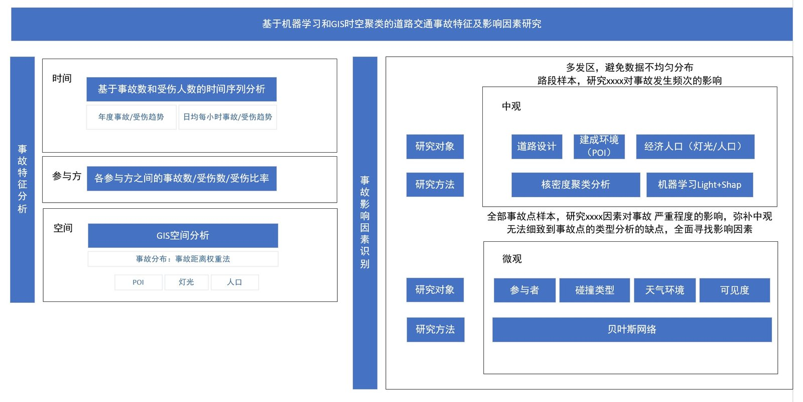
Who did what
| Task | Who | Notes |
|---|---|---|
| 2023 project lead, topic selection, data access | Me | PRP project T010PRP43015. Advisor: Prof. Tao Wang. February–September 2023. Two-person team. |
| ArcGIS Pro kernel density (KDE), colocation quotients (CLQ / LCLQ) | Me | Done on my own. I was lead author of the paper on spatial patterns of road crashes using colocation quotients. |
| LightGBM modeling and training | Teammate | My teammate Yuexin Min was lead author of the paper on crash factors using LightGBM and SHAP. |
| SHAP interpretation | Me + Teammate | I translated the feature effects into planning terms. |
| Bayesian network (GeNIe) | Team | Only variable discretization and network structure were finished. Parameter learning was not. The reworked report does not treat it as a finished model. |
| 2026 reworked report (Chinese and English, LaTeX); Gi* / Moran's I / NB residuals / OSM network screening / 25 LCLQ maps redrawn | Me | Done on my own. LightGBM and DTW clustering cannot be re-run. The raw micro data were lost. |
| 2026 Phase 2: four-step model, TransCAD replication, sensitivity, SPF/EB, 2035, VISSIM/SSAM | Me | Done on my own. |
Tools and versions
1 · Data and cleaning: from police call records to analyzable points
The raw data were not a crash database. They were police call records: free text, landmark-style addresses and no injury severity. I took four steps to make them ready for spatial analysis. Structure the text → geocode → assess location accuracy and "stacking" → link to road segments and grid cells.
Four raw datasets
| Dataset | Size | Fields | Use / limitations |
|---|---|---|---|
| Crash call records (Xichang Public Security Bureau, all of 2019) | 19,990 records | Call time; crash address (text); call content (free text, e.g. "car Chuan W××× hit motorcycle, 2 injured"). Matched to that day's weather, road surface, day/night, streetlight count and visibility. | Used for all point-level analysis. These are calls, not adjudicated crash reports. Injuries have no severity grade. Address precision varies. |
| Road segment data | 2,847 segments | Functional class, number of lanes, cross-section, median separation, direction. Office / commercial / residential POI counts, WorldPop population and night lights in a buffer. Distance to the rail station / airport / intercity bus stations. Crash count. | Used for the LightGBM frequency model. No traffic volumes. |
| POI (AMap) | 28,847 points | Commercial, 6 subtypes (shopping, dining, daily services, medical, education, sports); residential, 2 types (lodging, residential/business buildings); office, 2 types (companies, government) | Used for CLQ and grid correlation. POIs measure activity intensity, not exposure. |
| OSM roads, rail, water, transport hubs (downloaded 2026) | 6,168 segments | Class, name | Used for base maps and snapping. Note: this is the 2026 network, not the 2019 one. |
Crash point data dictionary (Appendix A)
crush ID, location (landmark or segment description), date / time of day / hours (0–23), weather (sunny / cloudy / light rain / moderate rain / heavy rain), road surface (dry / wet), types of crashes (angle / sideswipe / rear-end / rollover / other), lighting condition (day / night), streetlight (count), visibility, first / second participant (motor vehicle / heavy vehicle / two-wheeler / three-wheeler / pedestrian / other), injuries.
Only three crash types kept their geometry: angle 6,306, rear-end 2,420, rollover 658. That is 9,384 points in total. Sideswipe and "other" crashes have no coordinates. So "19,990 → 9,384" is not a geocoding failure. Geometry was kept for only three types.
Cleaning workflow (messy data → analysis-ready)
sjoin_nearest within 60 m. The match rate was 77.6%. Of these, 55.6% are on named roads. An intersection is a node with degree ≥3, with a 30 m radius. Only 12.9% of crashes are intersection-related. Typical values for cities abroad are 40–50%. The gap is an artefact of how addresses were recorded. It is not a feature of Xichang.Angle_商业_餐饮 (angle × dining) has only 2,425 rows. It actually holds rear-end points. The label is wrong. The rework script flags it by "rows < 5,000" and drops it. I do not use it as "angle × dining". Five LCLQ results, including angle × office and angle × residential, were not kept. So the appendix has only 25 pairs.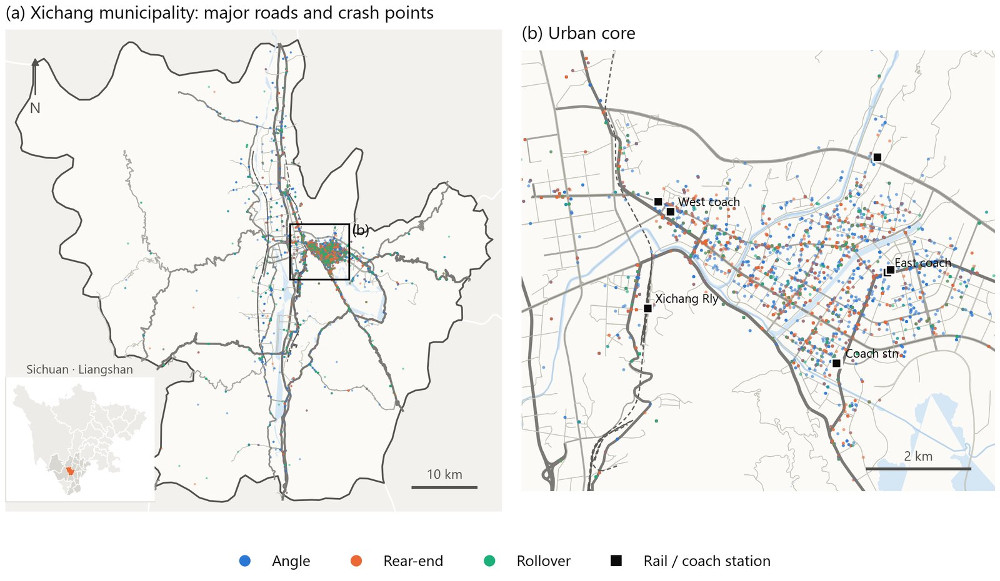
"The data were police call records with free text and landmark addresses. We extracted crash type, participants and injuries with keyword rules plus manual checks. We geocoded the addresses with the AMap API. Then I audited location quality. The 9,384 points sat on only 1,992 unique coordinates, up to 197 crashes per point. Only 13% could be linked to intersections, versus 40–50% internationally. So I report intersection rankings as 'crashes that could be located to an intersection', not full intersection risk. I also found a mislabeled layer in the geodatabase by its row count and excluded it."
- Call records cover far more than official crash statistics. They include many minor property-damage-only crashes. "Casualties" means persons injured. It cannot be converted to fatalities.
- Spatial analysis is biased toward points near landmarks. Intersection rankings should be read as rankings of "crashes that could be located to an intersection".
- I did not keep a spot-check accuracy for the text extraction. I did not record the geocoding failure rate.
- The raw micro data were not saved after the project closed. In 2026 I could only recompute from four things: summary tables, the 9,384 points in the geodatabase, the LCLQ results and the 28,847 POIs. LightGBM and DTW clustering cannot be re-run.
2 · Who gets hurt and when: three counterintuitive results
Descriptive statistics are more than bar charts. All three results in this section depend on choosing the right exposure, that is, the right denominator. For severity I use casualties per crash. For weather I use the number of days. Day versus night has no exposure measure. That is a limitation.
2.1 Participant pairs and severity
Method
The data have no injury severity grade. So I use casualties per crash as the severity measure K/N. k is the number of casualties and n is the number of crashes. For the 95% confidence interval of the rate k/n I use the Garwood exact Poisson interval:
What I did and results
I built a 6 × 6 matrix of participant pairs. The matrix is symmetric, so I use only the upper triangle. For each cell I computed k/n and its confidence interval.
- Motor vehicle × motor vehicle: 11,407 crashes (57%). Only 0.06 casualties per crash.
- The most dangerous pair is heavy vehicle × pedestrian: 70 crashes, 143 casualties. That is 2.04 per crash (CI 1.72–2.41), 8 times the city mean of 0.26. Next come pedestrian × three-wheeler 1.11, pedestrian × two-wheeler 1.07 and motor vehicle × pedestrian 1.04. Motor vehicle × two-wheeler has 0.66 per crash, but the count is large. It has 1,746 casualties, one third of the total.
- Crashes involving vulnerable road users: 5,223 crashes (26.1%) → 4,050 casualties (79.1%), 0.78 per crash. Other crashes: 14,767 crashes → 1,072 casualties, 0.07 per crash. The ratio is 10.7 times. Every pair with a vulnerable road user is significantly above the mean. Every motor-vehicle-only pair is significantly below it. The confidence intervals of the two groups do not overlap.
Economic reading: in an asymmetric collision, the heavier party causes almost all of the marginal external cost (Lindberg 2001). The lighter party bears that cost. So corrective policy should target the heavier party: speed limits, access restrictions, right-of-way and physical separation. Policy should not rest on "safety education" for vulnerable users.
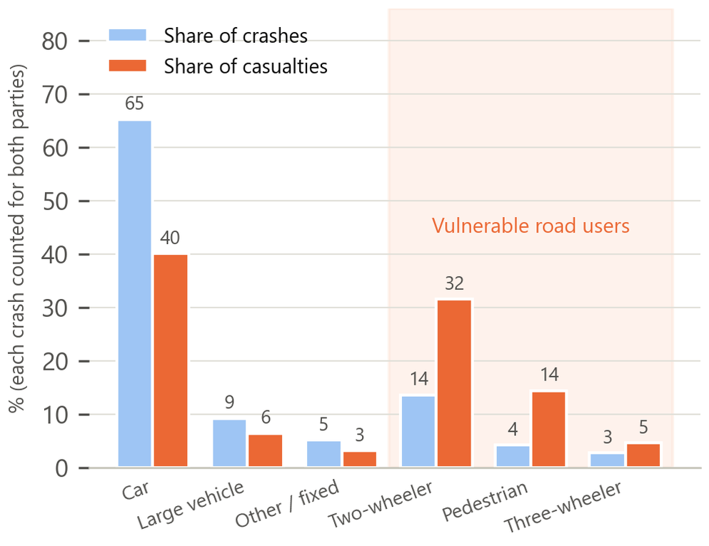
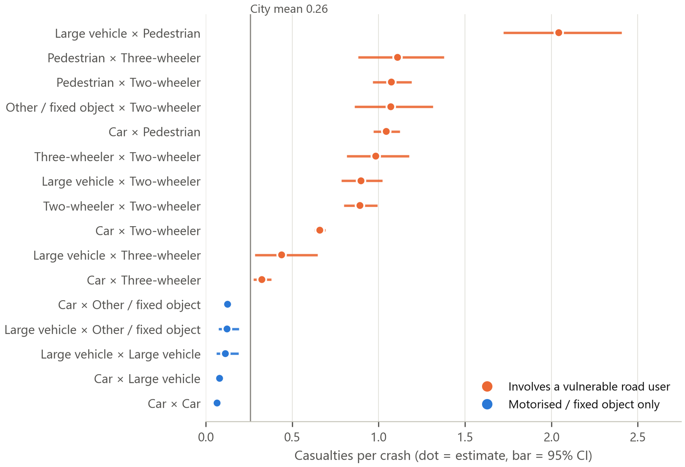
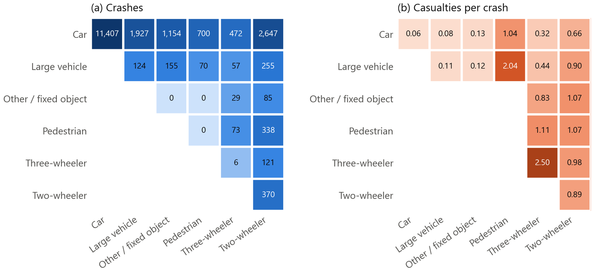
2.2 Weather: exposure confounding and risk compensation
Method
Comparing total crashes across weather types is wrong. The totals are confounded by the number of days. I use the number of days with each weather as exposure. Then I compute the daily crash rate and the rate ratio relative to sunny days:
| Weather | Days | Crashes | Per day | RR vs sunny | 95% CI | Night share |
|---|---|---|---|---|---|---|
| Sunny | 135 | 7,652 | 56.7 | 1.00 | — | 21.0% |
| Cloudy | 46 | 2,574 | 56.0 | 0.99 | [0.94, 1.03] | 19.7% |
| Light rain | 151 | 8,155 | 54.0 | 0.95 | [0.92, 0.98] p = 0.002 | 20.6% |
| Moderate rain | 24 | 1,283 | 53.5 | 0.94 | [0.89, 1.00] p = 0.05 | 18.9% |
| Heavy rain | 5 | 326 | 65.2 | 1.15 | [1.03, 1.29] p = 0.013 | 19.0% |
The 2023 report said "light rain has the most crashes (8,155, 41%)". That is classic exposure confounding. There were 151 light-rain days, more than the 135 sunny days. After adjusting for days, light-rain and moderate-rain days have crash rates 5–6% lower than sunny days. Only heavy rain is significantly higher. This fits risk compensation (Peltzman 1975). Drivers can perceive mild surface risk. They slow down, keep longer gaps and travel less. This offsets the risk. Heavy rain cuts visibility and floods the road surface. That is beyond what drivers can compensate for.
Planning implication: rainy-day safety campaigns have low marginal benefit. It is more effective to reduce physical risk during heavy rain. Examples: drainage, skid-resistant pavement, signs at flood-prone spots and arterial traffic control during storm warnings.
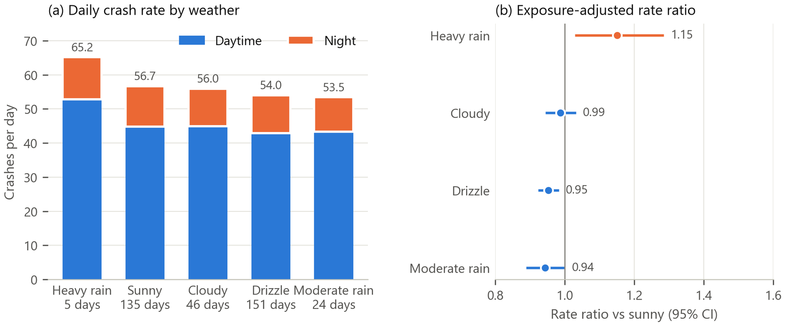
2.3 Day/night, seasonal and hourly patterns
- Day/night: 15,891 crashes by day and 4,099 at night (20.5%). The night share barely changes across the five weather types (19–21%). So weather and day/night effects are additive, with no interaction. Split into two 12-hour halves, the daytime crash rate is 3.9 times the night rate. Most of this gap comes from exposure. Night traffic is usually only 15–25% of daytime traffic. I have no hourly traffic volumes. So I cannot assess the marginal benefit of streetlights.
- Seasonal: January–June is low and flat. Crashes rise from July and stay high in August because of summer tourism. They rise again in October. They peak in December, when the Anning River valley has frequent winter fog.
- Hourly: very few crashes from 0–6 h. A sharp rise at 7 h. Twin peaks at 8 h and 18 h. A decline after 20 h.
DTW clustering (original 2023 analysis, cannot be re-run): three "crash rhythms" of road segments
Method: DTW (dynamic time warping) is a distance measure. It lets two time series stretch along the time axis to align. So it tolerates shifted peaks. Each segment has a 168-hour (one-week) crash series. I computed pairwise DTW distances and ran k-medoids clustering. Two measures together set the number of clusters k: the mean DTW distance and the silhouette coefficient S = (b − a) / max(a, b). a is the mean distance to other points in the same cluster. b is the mean distance to the nearest other cluster.
Results: k = 3. The three clusters match three crash density levels. Sparse segments (< 2.5 crashes per week on average) show no daily pattern and look close to random. Medium segments (< 5) have only an evening peak. Dense segments (< 10) have morning and evening peaks, and night crashes are not zero. Implication: safety spending on dense segments can be scheduled by time of day, such as peak signal timing and enforcement. On sparse segments it can only be allocated by place, such as engineering measures.
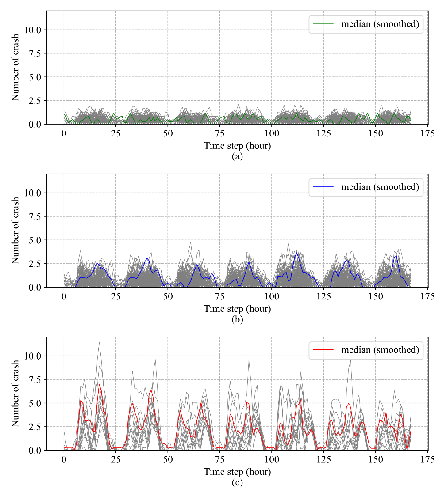
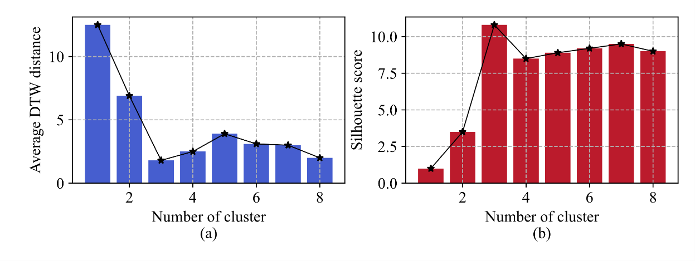
"Vulnerable road users were in 26% of crashes but took 79% of the injuries. Rain looked dangerous by raw counts. Then I divided crashes by the number of days with each weather. Light and moderate rain had lower crash rates than clear days. This is consistent with risk compensation. Only heavy rain was significantly higher. Throughout, I used Garwood Poisson intervals and rate ratios, not raw counts."
3 · GIS spatial analysis: from points to hot spots to road segments
The spatial analysis has three layers. The first is a continuous surface: kernel density estimation (KDE) shows where crashes concentrate. The second is grid statistics. Gi* and Moran's I test whether the clustering is significant. The Lorenz curve measures how concentrated it is. The third is the road network: I snapped crash points to OSM segments and intersections. Segments and intersections are the units that engineers can act on.
3.1 Kernel density estimation (KDE)
Method
Place a smooth "kernel", like a small hill, on each crash point. Add up all the hills to get a continuous density surface:
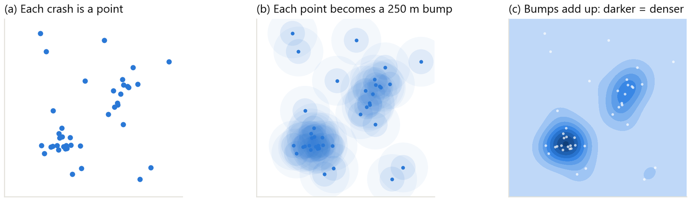
2023 vs 2026
- 2023: ArcGIS Pro Kernel Density tool with a search radius of 0.01. The coordinate system was WGS84, so this meant 0.01 degree ≈ 1.1 km. The output unit was "per square degree", which has no physical meaning. That is why the 2023 report showed peaks such as 273,500.
- 2026: project to UTM 48N first. Use a 250 m Gaussian kernel on a 100 m grid. Density is in crashes/km². Each crash type has its own color scale.
Results
All three crash types share one core. The core is the old commercial district bounded by Chang'an Middle Road, Chang'an South Road, Hangtian Avenue Section 1 and Sanchakou South Road. It also includes the corridor along Chang'an Road, east to the East Coach Station and west to the West Coach Station. Peak densities: angle > 300 crashes/km², rear-end about 180, rollover only 25. Angle and rear-end crashes stretch along arterials and cluster at intersections. Rollovers are more dispersed. Outside the city they form separate clusters on the G5 Jingjiu section and the G348 Heyan section. The cause is curves and grades.
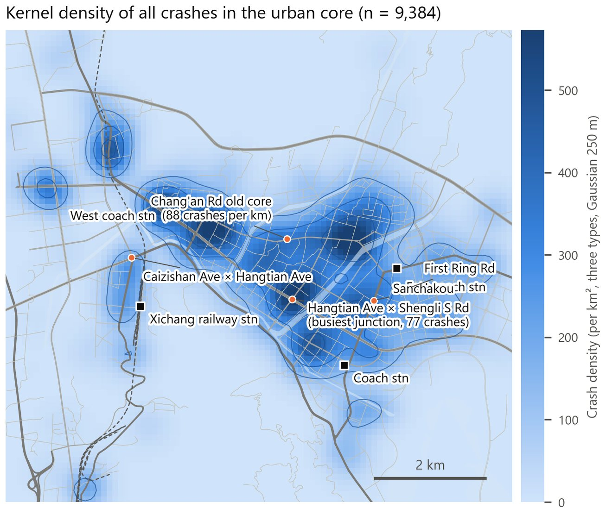
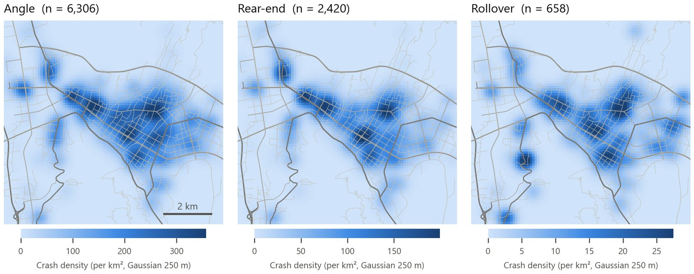
3.2 How concentrated: Lorenz curve and Gini coefficient
I sorted the 250 m grid cells with crashes in descending order of crash count. Then I plotted the cumulative curve. All three types together have 830 cells with crashes. The densest 5% of cells hold 32% of crashes, 10% hold 48% and 20% hold 67%. The Gini is 0.64 for all types combined. By type: angle 0.59, rear-end 0.57, rollover 0.41.
Reading the marginal-return curve: covering the top 10% of cells reaches almost half of all crashes. These are about 80 cells, about 5 km². The next 10% of cells adds only 19 percentage points. Each further 10% adds fewer than 10 points. This is the direct basis for the proposal of a 30 km/h zone in the core.
Limitation: the modifiable areal unit problem (MAUP). Cell size changes the Gini and the correlation coefficients. For cells of 100–500 m the direction of the results is stable. But I did not report a systematic sensitivity test.
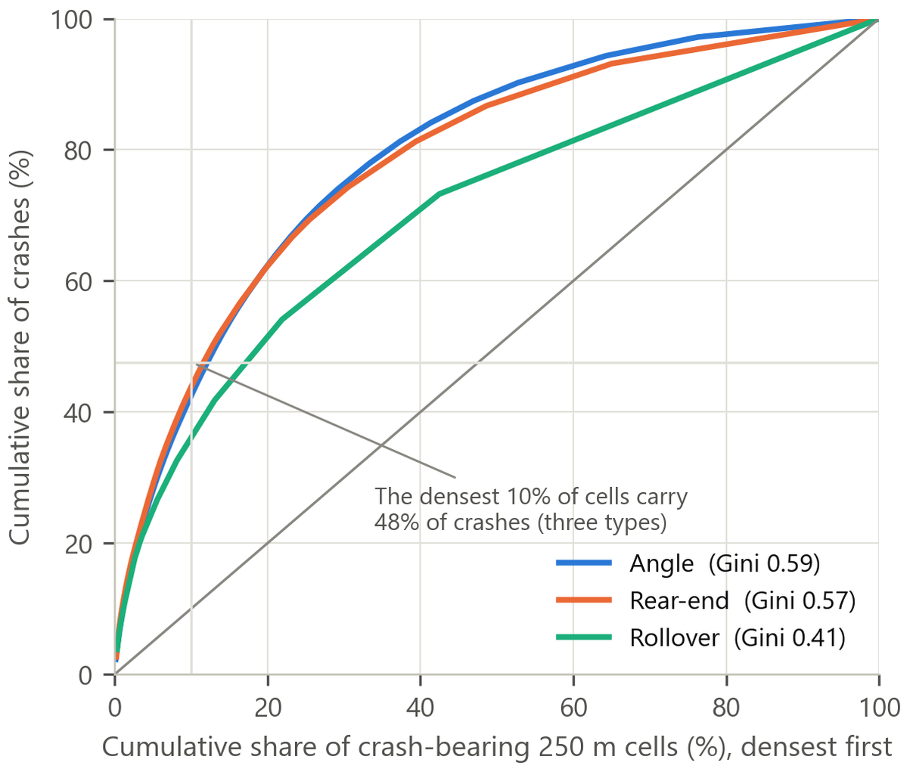
3.3 Is the clustering significant? Moran's I and Getis-Ord Gi*
Global Moran's I (Moran 1948)
Local Getis-Ord Gi* (Getis & Ord 1992)
Gi* versus KDE: KDE is a density. It only says "there are many here". Gi* is a statistic. It says "this cell and its neighbors are high together", and too high to be random. Gi* measures how far the neighborhood sum departs from the global mean. So an isolated high cell is not necessarily a hot spot. A connected area of moderately high cells can be one.
What I did and results
The central city has 1,188 cells of 250 m. Gi* uses a 3 × 3 convolution. Moran's I uses queen contiguity without the cell itself and 999 permutations. Result: Moran's I = 0.29 (p = 0.001). There are 156 hot-spot cells at 95% or above, 128 of them at 99%. They are 13% of cells but hold 65% of crashes (3,764). The hot spots form a continuous "hot belt": West Coach Station → Chang'an Road → old commercial district → East Coach Station → southeast along Hangtian Avenue. There are no significant cold spots.
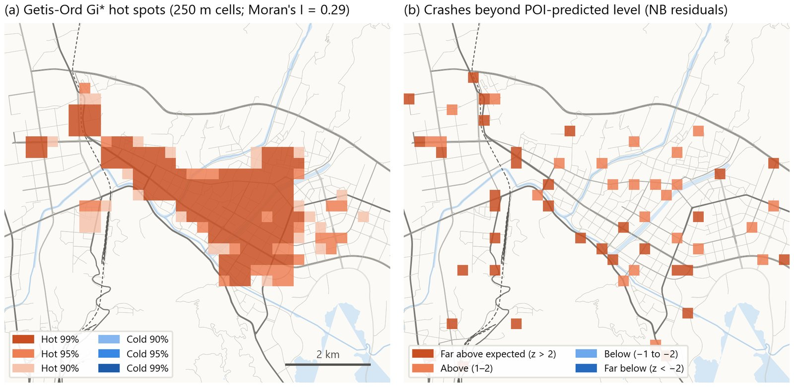
3.4 Network screening: snapping to OSM segments and intersections
Why: engineering measures are applied to roads and intersections. Grid hot spots are not something engineers can act on. So I snapped each crash point to the nearest segment. Then I summed crashes and crashes per km by road name. For crashes per km, the exposure is the total OSM length of all segments with that name. An intersection is a node with degree ≥ 3. Crashes within 30 m of an intersection count as "intersection-related".
How: I used osmnx to get 3,424 drive segments in the core, plus 2,744 national/provincial highway and arterial segments city-wide. I projected them to UTM 48N. Snapping used geopandas.sjoin_nearest(max_distance=60). Road names came from the OSM name field.
Results
- The top 15 roads are 8.7% of road length but carry 33% of matched crashes. By crash count: Hangtian Avenue 534 (9 per km), Wuda Line 288, First Ring Road 218, Heyan Road Section 2 206, Haibin Middle Road 159. But the highest per km are short streets in the old town: Chang'an Road 88 per km, Chang'an East Road 70, Chuncheng Road 55, Chang'an Middle Road 53.
- By OSM class: trunk 16.9 per km, secondary 13.4, tertiary 8.2, primary only 6.0. Density does not rise steadily with road class.
- The top three roads for rollovers are all through arterials: Fengxiangkou Bridge section 33, Wuda Line 28, Hangtian Avenue 27.
- Intersections: Hangtian Avenue × Shengli South Road, 77 crashes, ranks first, with 42 angle and 33 rear-end. Second place has only 36. The top 15 intersections hold 47% of crashes that could be located to an intersection.
Limitations: the network is from 2026. The 12.9% intersection-related share comes from how addresses were geocoded. Roads that share a name dilute the per-km density. For example, the merged OSM length of Hangtian Avenue is 58.6 km.
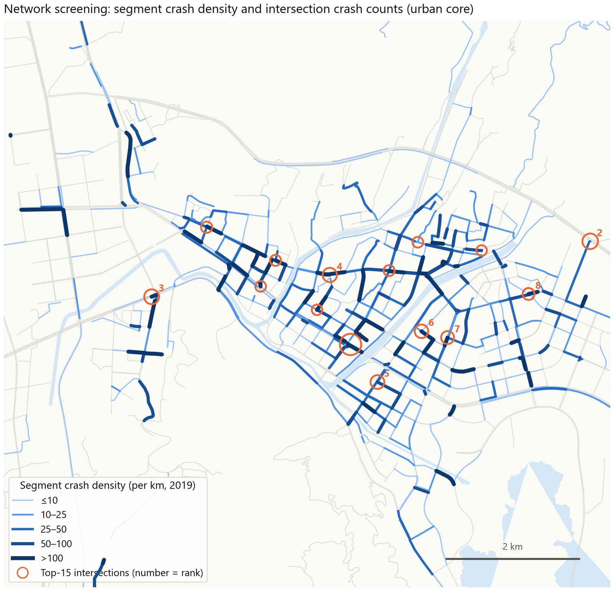
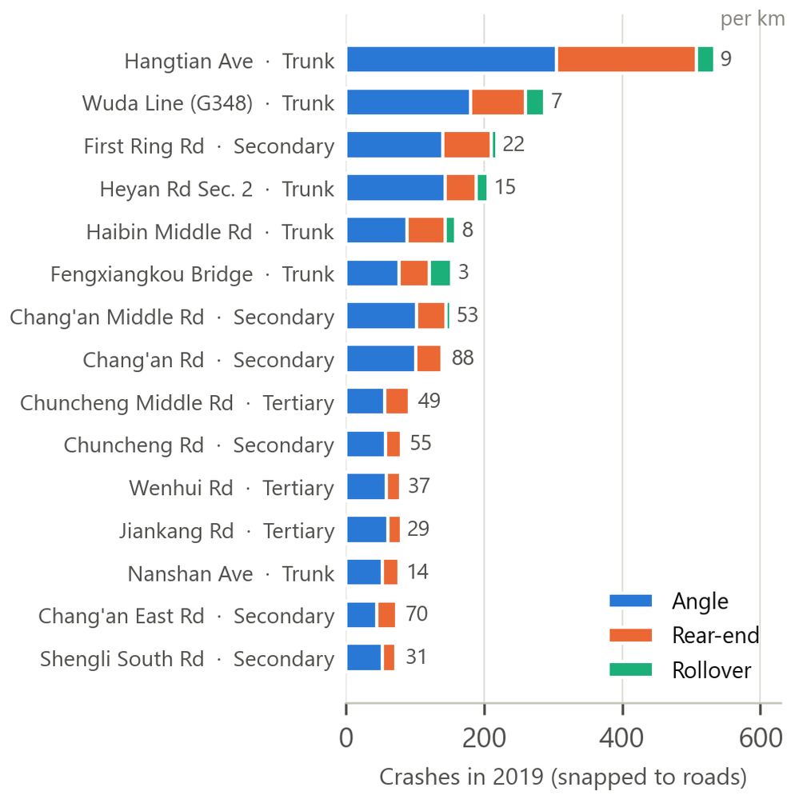
3.5 Built environment: POI correlation, negative binomial residuals, hub distance bands
Negative binomial regression: method
Crash counts are overdispersed: the variance exceeds the mean. So a Poisson model does not fit. I used a negative binomial model:
Pearson residual zi = (yi − μ̂i) / √(μ̂i + α μ̂i²) β1 is a log elasticity: 1% more POIs → β1% more crashes. Cells with z > 2 are marked "significantly above what activity predicts". This is the "risk" term of the identity, not the "exposure" term.
Results
- On a 500 m grid, Spearman ρ = 0.82. The densest quintile has 87 crashes per cell. The sparsest has 1.7.
- But crashes per unit of activity fall as density rises: crashes per 100 POIs drop from 113 in Q1 to 23 in Q5. Density is a positive externality for safety, because speeds are lower. Total activity hides this effect.
- NB results: β1 = 0.65 (s.e. 0.04), α = 2.0. There are 33 excess cells with z > 2. They have 1,484 observed crashes against 204 expected. The top 8 excess cells are almost all on through arterials: Wuda Line, Dangui Bridge, First Ring Road and Hangtian Avenue. One Wuda Line cell has 77 crashes, 2 POIs, 2.2 expected and z = 21.3.
- Hubs: within 1 km of the coach stations, density is 10 times that of the 2–3 km band. But crashes per 100 POIs are flat across bands (25–35). So activity intensity fully explains the high density near coach stations. The rail station is different. In the 0–0.5 km band there are 52 crashes per 100 POIs. This falls steadily to 27 farther out. So the station forecourt area carries its own risk. The cause is taxis, three-wheelers, pedestrians and pick-up/drop-off cars mixing.
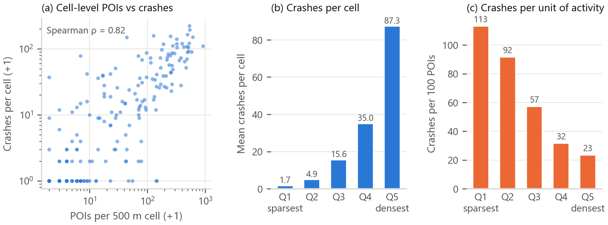
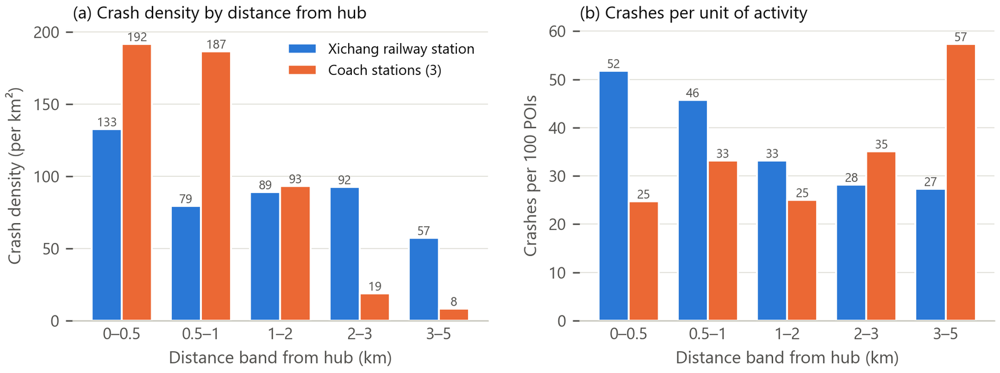
"I used ArcGIS Pro for kernel density by crash type, Getis-Ord Gi* and Moran's I. I also used it for colocation quotients between crash types and POI types, and for maps for non-technical readers. I used Python GeoPandas for the reproducible parts. I snapped 9,000 crashes to OSM to rank roads and intersections. I also did grid statistics and negative-binomial residual maps. One insight: the hot-spot and colocation analysis showed where crashes 'live'. The demand model later showed how much of that was simply exposure."
4 · Colocation quotient (CLQ / LCLQ)My own work
The question: "Do angle crashes happen more often next to shopping centers?" Counting POIs inside a buffer does not answer it, because shopping POIs are common everywhere. The CLQ divides "the share of B near A" by "the share of B citywide". This controls for how many B points exist. The CLQ is asymmetric. It has a local version and a permutation test.
Global CLQ
This card gives the definition and the sources. Leslie & Kronenfeld (2011) proposed the global CLQ. Cromley, Hanink & Bentley (2014) proposed a geographically weighted version. Wang et al. (2017) proposed the local CLQ with a permutation test. The ArcGIS Pro "Colocation Analysis" tool is based on the Wang version.
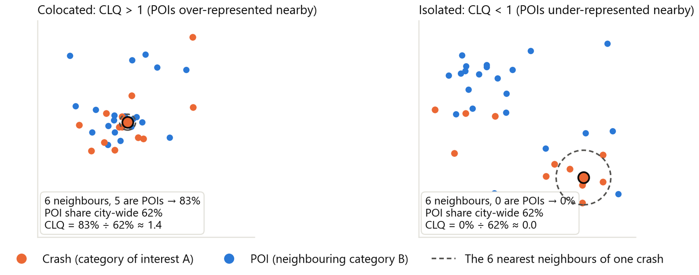
Local LCLQ (one value per A point)
wij = exp( −0.5 · dij² / dib² ) (Gaussian kernel; dib is the bandwidth distance of point i) fij = 1 if j ∈ B, otherwise 0. Near neighbors get large weights. The weight falls close to zero at the bandwidth.
How the ArcGIS Pro tool works
- Neighborhood: K nearest neighbors (default 8), a distance band, or a spatial weights matrix.
- Kernel: with a Gaussian kernel, weights decay with distance. A box kernel gives equal weights.
- Significance: a local permutation test, 99 permutations by default. Each permutation shuffles the B labels and recomputes the LCLQ. This gives the p-value.
- Output fields:
LCLQ,p-value,LCLQTYPE. LCLQTYPE has five classes: Colocated–Significant, Colocated–Not Significant, Isolated–Significant, Isolated–Not Significant, Undefined. Undefined means no B point falls in the neighborhood, so the LCLQ cannot be computed. The global CLQ table also gives a p-value for each pair of categories.
Terminology: the 2023 Chinese report called this measure "location entropy". The defense reviewers pointed out that it is a quotient, not an entropy. The rebuilt report uses "colocation quotient (CLQ)" throughout.
What I did in this project
In 2023 I ran three analyses in ArcGIS Pro. (1) Global CLQ between crash types (5 × 5). (2) Global CLQ of 10 POI types (category of interest A) × 5 crash types (neighboring category B) (10 × 5). (3) 30 local LCLQ runs (3 crash types × 10 POI types); the geodatabase (GDB) kept 25 of them. In 2026 I redrew the heat maps in Python and computed a net colocation index. I also read the LCLQTYPE field from the GDB and redrew the maps of significant points.
Results
① Between crash types: all 3.5–8.6, far above 1
Near any crash type, the share of every other type is 3–4 times its global share. Crash types show no spatial division of labor. They all respond to traffic volume and conflict-point density. Rollover self-colocation (8.63) is the highest. "Other" self-colocation (6.36) is second. These two types are strongly site-specific (curves, grades, road surface). They suit engineering "spot treatment" best.
② POI → crash: almost all < 1 (0.35–0.95)
Catering 0.36–0.46, shopping 0.35–0.46, daily services 0.39–0.51, and so on. Only three pairs are slightly > 1: government × rollover 1.24 (p = 0.02, the only significant one), business-residential × other 1.21, and education × other 1.04.
③ Local LCLQ: 80–90% of points are not significant
Net colocation = % significantly colocated − % significantly isolated. Results: government +2.2, business-residential +2.2, education +1.6, sports +1.2, healthcare +0.7; accommodation 0; daily services −0.9, companies −1.6, catering −1.6, shopping −5.4.
④ A better explanation: from "police attention" to "speed environment"
The 2023 report explained the isolation of shopping and company POIs as "heavy traffic, a police priority, alert drivers". It explained the colocation of residential and government POIs as "a relaxed setting that makes drivers careless". In 2026 I changed the explanation to speed environment. Shopping and catering streets are the most congested and the slowest. Low speed suppresses the crashes that get reported to police. Roads past government offices, schools and business-residential blocks are wider and faster. Three other findings support this: crashes per unit of activity fall as density rises; negative binomial (NB) residuals concentrate on through arterials; and the railway station area shows excess crashes.
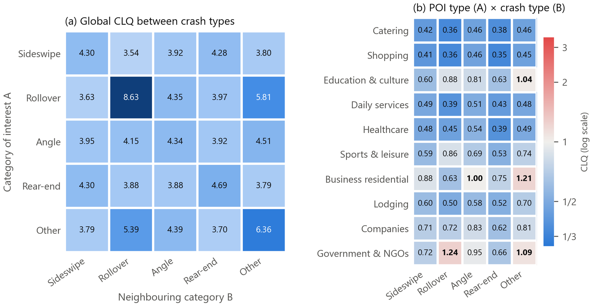
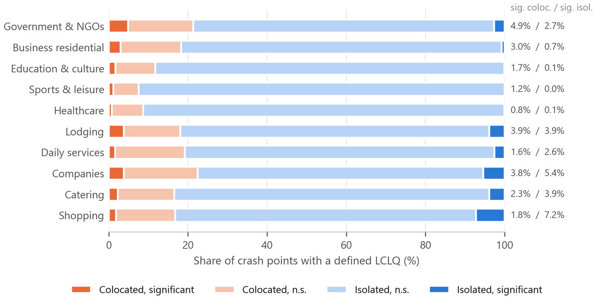
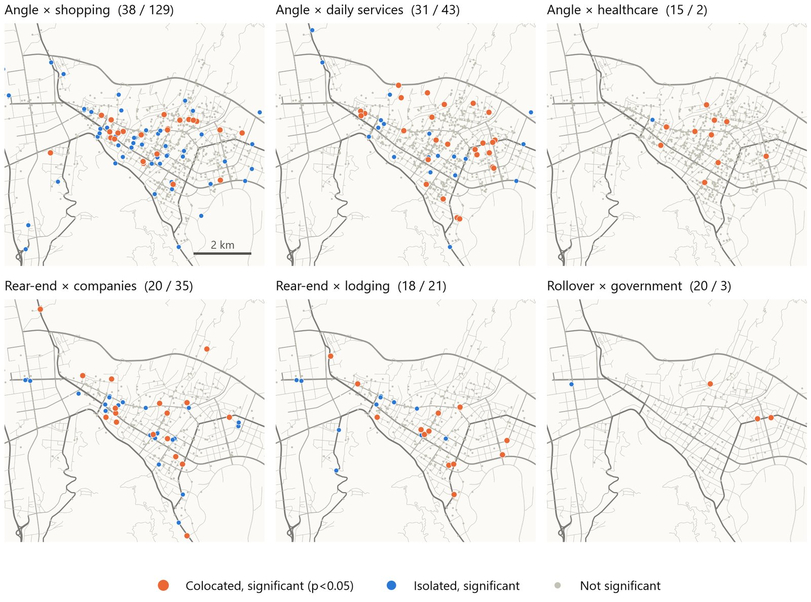
Appendix: all 25 LCLQ layers
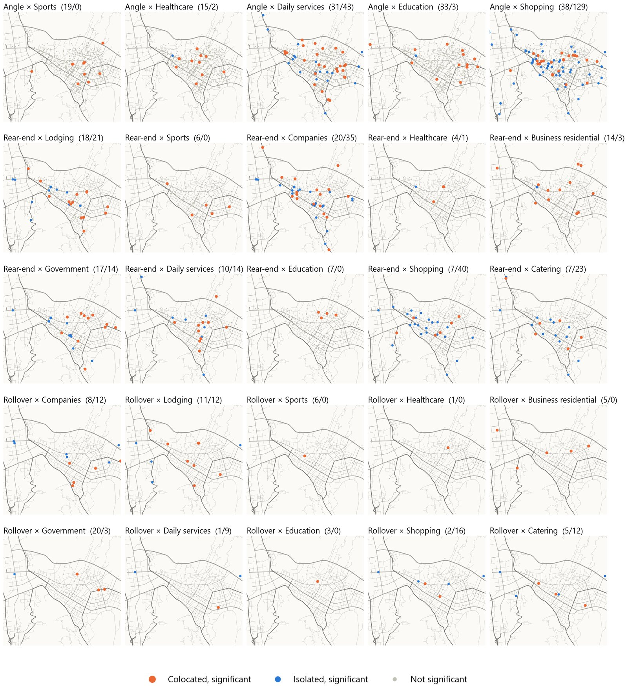
"A buffer count tells you how many shops are near crashes. It does not tell you if that is more than you expect, given how many shops exist. The colocation quotient divides the share of B among A's nearest neighbors by B's global share. So 1 means random. It is asymmetric. It has a local version with a Gaussian kernel. ArcGIS Pro tests significance by permuting labels. I also found a scale artifact. When B vastly outnumbers A, the B-to-A quotients are systematically below 1. So I interpret the direction, not the magnitude. Next time I would subsample POIs."
- Scale effect (POIs ≫ crash points). LCLQ significance has no multiple-testing correction. K nearest neighbors and bandwidth used the ArcGIS defaults, and the report did not record the exact values.
- One GDB layer was mislabeled (rear-end stored as angle × catering). Five other layers were not kept.
- In the 2026 rebuild I removed template text that did not relate to Xichang.
- The 2023 analysis once misread "Neighbor prevalence" in the attribute table (the POI share in the neighborhood) as crash density.
5 · Machine learning: LightGBM + SHAP, and an unfinished Bayesian network
The segment-level question: across 2,847 road segments and 13 features (land use, distance to hubs, road attributes), which features drive crash counts? Classic Poisson / negative binomial regression needs strict assumptions. But these features are highly collinear and have thresholds and interactions. GBDT handles nonlinearity and interactions automatically. The cost is interpretability. So SHAP translates the results back. Model trained by my teammate Yuexin MinI helped interpret SHAP
5.1 How GBDT and LightGBM work
Gradient boosted decision trees (GBDT): the prediction is the sum of T regression trees, f(x) = Σt ht(x). Each new tree fits the negative gradient of the current loss, that is, the residual. The trees "correct errors" one after another.
LightGBM (Ke et al., NIPS 2017, Microsoft) is faster and uses less memory than XGBoost. It handles categorical variables natively and is robust to collinearity. It relies on three techniques:
- GOSS (gradient-based one-side sampling): keep the top a × 100% of samples by absolute gradient. Randomly draw b × (1 − a) × 100% of the rest, and scale their weights up by (1 − a)/b. A large gradient means the current model fits poorly, so the sample carries more information. These samples must be kept.
- EFB (exclusive feature bundling): bundle mutually exclusive sparse features into one feature. Mutually exclusive means they are never nonzero at the same time. This reduces dimensionality.
- Histogram algorithm + leaf-wise growth: bin continuous features. Grow the tree at the leaf with the largest gain, not level by level.
Why this model: segment crash counts are overdispersed counts. The features are highly collinear, for example lane count and road class, or office density and night lights. The features also have thresholds and interactions. GBDT handles nonlinearity and interactions automatically and is robust to collinearity. Its weakness is interpretability, so it is paired with SHAP.
5.2 How SHAP works
SHAP (SHapley Additive exPlanations, Lundberg & Lee 2017) splits each prediction into additive contributions:
φj = ΣS ⊆ F∖{j} [ |S|! (|F| − |S| − 1)! / |F|! ] · [ fS∪{j}(x) − fS(x) ] φj is the game-theoretic Shapley value (Shapley 1953). It is the average marginal contribution of feature j over all possible joining orders. It satisfies four properties: efficiency (the terms sum to the prediction minus the mean), symmetry, dummy, and additivity. Exact computation is exponential, 2|F|. TreeExplainer (Lundberg et al. 2020) computes it exactly for tree models in polynomial time.
Intuition: think of the 13 features as 13 teammates. Together they "produce" the crash count of a segment. A feature's SHAP value is how many crashes it contributes on average, positive or negative. The average runs over all joining orders, so it is fair.
5.3 How to read SHAP plots
| Plot | x-axis / y-axis / color | What to look for |
|---|---|---|
| Summary plot (beeswarm) | One row per feature, sorted by mean |SHAP|. One dot per segment. The x-axis is the SHAP value; here the unit is a shift in crash count. Color = feature value, red high, blue low. | Red dots on the right → high values add crashes. A wide horizontal spread → large effect. Clean left/right color separation → a monotonic relationship. |
| Importance bar | Mean absolute SHAP, (1/n) Σ |φij| | Feature importance ranking. It is more stable than gain-based importance. |
| Dependence plot | The x-axis is the feature value. The y-axis is that feature's SHAP value. Dot color = value of a second feature. | Look for nonlinearity, such as thresholds and kinks. Color layers at the same x value → an interaction effect. |
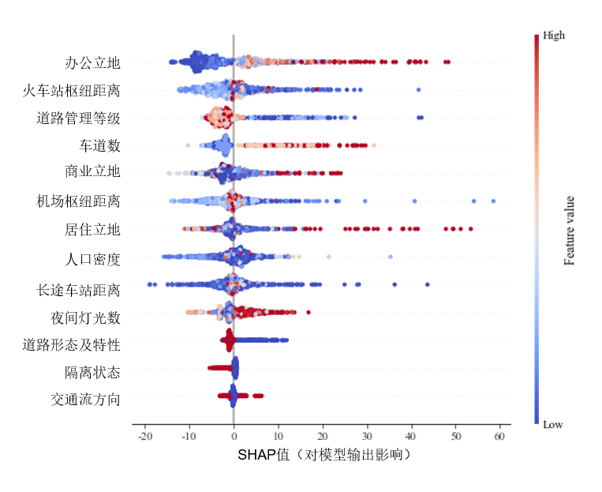
5.4 Method and results in this project
Data: 2,847 segments. The dependent variable is the segment crash count (a count, not a rate). The 13 features fall into three groups. Land use: office / commercial / residential POI counts, WorldPop population density, night lights. Hubs: distance to the railway station / airport / long-distance bus station. Road: administrative class, lane count, road form, median type, direction of flow.
Mean |SHAP| falls into three tiers. Tier 1, > 4: office land use 7.3, railway station distance 4.5, administrative class 4.4, lane count 4.2. Tier 2, 2.5–3.5: commercial, airport distance, residential, population density, bus station distance, night lights. Tier 3, < 1.6: road form, median type, direction of flow.
Direction: all land-use features are positive. All hub distances are negative: nearer means more crashes. Higher class and more lanes mean more crashes. Segments with a physical median have almost all negative SHAP. It is the only road attribute in the model that lowers crashes systematically.
Seven patterns in the dependence plots
- Below 50 office POIs, SHAP ≈ 0. Above 50 it rises roughly exponentially. The densest segments reach +40 to +50 crashes. This is a threshold effect.
- Residential density has a kink at about 100. It interacts with road class: at the same density, higher-class roads have more crashes.
- Night lights below 20 give all-negative SHAP. Above 50, SHAP rises clearly.
- Commercial land use is nonlinear but rises overall. Where commercial and office uses are both dense, SHAP is clearly higher.
- Hub effects are local. SHAP is positive and volatile within 3 km of the railway station, 5–7 km of the airport, and 1–2 km of the bus station. Beyond that it returns to zero. Segments near hubs are also dense commercial segments. Hubs act through the activity around them.
- ≤ 3 lanes: all negative. ≥ 4 lanes: all positive. ≥ 8 lanes: another jump. This is the cleanest design signal: "wide roads are more dangerous", in the sense of crash burden.
- Divided two-way roads have the highest SHAP in economically active areas. Frontage roads are also in active areas, but they contribute very little. This suggests that separating through traffic from local traffic works in itself.
Economic reading: land use and hubs act mainly through exposure. Road class and lane count act on both exposure (more vehicles) and risk (higher design speed, more complex lane changes). This is risk compensation in reverse: "the safer the road looks, the faster people drive". A physical median does not depend on driver discipline. It is central to the Safe System approach. International evidence: physical medians on urban arterials can cut injury crashes by 20–40%. The office threshold effect suggests that land-use approvals should include a traffic impact assessment to internalize the externality.
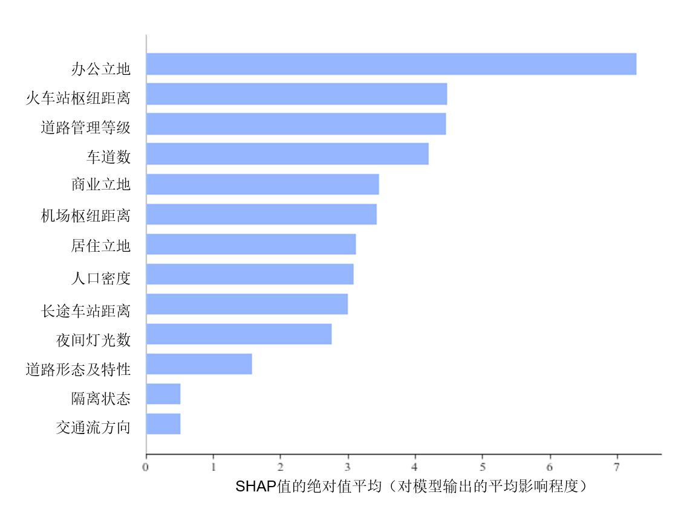
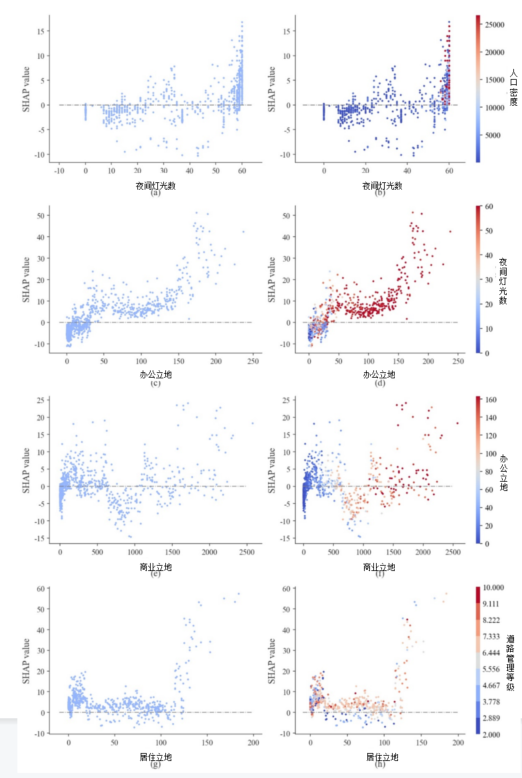
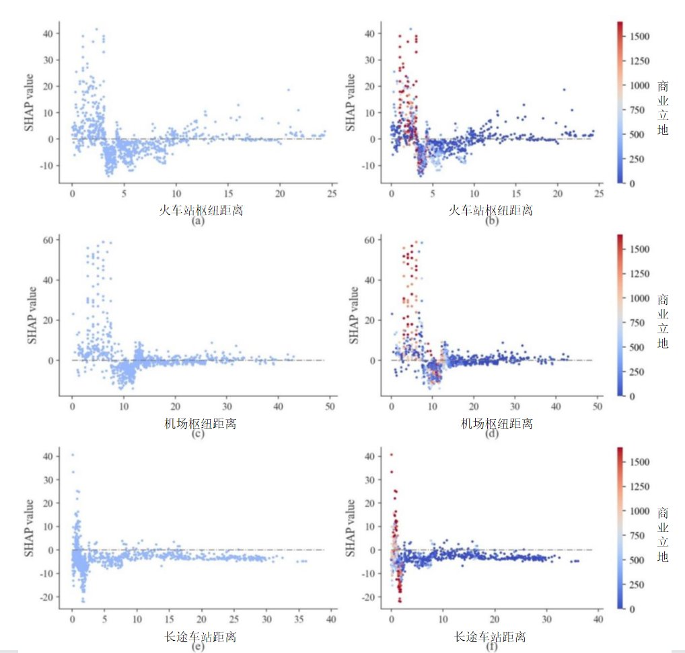
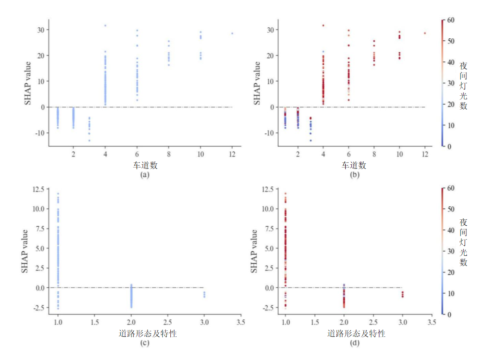
- The model explains crash counts, not crash rates. We had no segment traffic volumes. Any feature that raises traffic volume acts through both exposure and risk. The model cannot separate the two channels. The Phase 2 SPF gives indirect evidence: within a road class, the elasticity of crashes with respect to VKT is only 0.00–0.45. So much of "higher-class roads have more crashes" is traffic volume.
- Correlation is not causation. The direction of SHAP is more reliable than its size. Unobserved traffic volume, intersection density and speed limits may confound the results.
- The final project report gave no accuracy metrics (no RMSE / R², no description of a train/test split). The hyperparameters were not kept. The raw data were lost, so the model cannot be retrained. The figures are the 2023 originals.
- Division of work: my teammate trained the model. I took part in interpreting the features. In 2026 I reinterpreted the results on my own.
"The team trained a LightGBM model of segment crash counts. It used 13 land-use, hub-distance and road-design features. My part was the SHAP interpretation. Office density had a threshold around 50 POIs. Lane count flipped sign at four lanes. Physical medians were the only design attribute with consistently negative SHAP. The main caveat: the target was a count, not a rate. So exposure and risk were confounded. Phase 2 fixed exactly that. It showed that much of the road-class effect was traffic volume."
5.5 Bayesian network (2023 method, not finished)
Principle
Bayes' theorem: P(A|B) = P(B|A)·P(A) / P(B). A Bayesian network is a directed acyclic graph (DAG). Nodes = random variables, edges = conditional dependence, no edge = conditional independence. The joint distribution is P(X1…Xn) = Πi P(Xi | parents(Xi)). Experts can set the structure, or it can be learned from data. Learning methods come in two kinds: score-based (such as BIC / K2) and constraint-based (such as PC). The parameters are conditional probability tables (CPTs), learned from data by EM or maximum likelihood. Strengths: it handles uncertainty and missing data, and it supports scenario inference. Example: "with rain + night + poor street lighting, what is the probability of a severe crash?"
Mutual information is used for feature selection: I(X;Y) = Σ p(x,y) log[p(x,y) / (p(x)p(y))] = H(Y) − H(Y|X). It measures how much knowing X reduces the uncertainty about Y.
How far this project got
The tool was GeNIe. In 2023 the team first discretized the variables and computed marginal distributions (N = 19,990). Severity: minor 77% / moderate 20% / severe 3%. Visibility: good 41 / fair 34 / poor 25. Street lighting: good 59 / fair 26 / poor 14. Day 79 / night 21. Weather: clear 38 / cloudy 13 / light rain 41 / moderate rain 6 / heavy rain 2. Road surface: dry 51 / wet 49. The network structure came from the literature and experience: weather → road surface, visibility; lighting + street lights → visibility; participants → collision type; road surface + visibility + collision type → severity. Parameter learning and validation were not completed.
Only descriptive conclusions are possible. Severity is highly skewed: 3% ≈ 600 "severe" crashes, almost all in combinations of vulnerable road users (VRU) and heavy vehicles. "Poor" visibility is 25%, while night is only 21%. So poor visibility also comes from rain and fog. Most of the variance in severity comes from "who hit whom", not from weather or lighting.
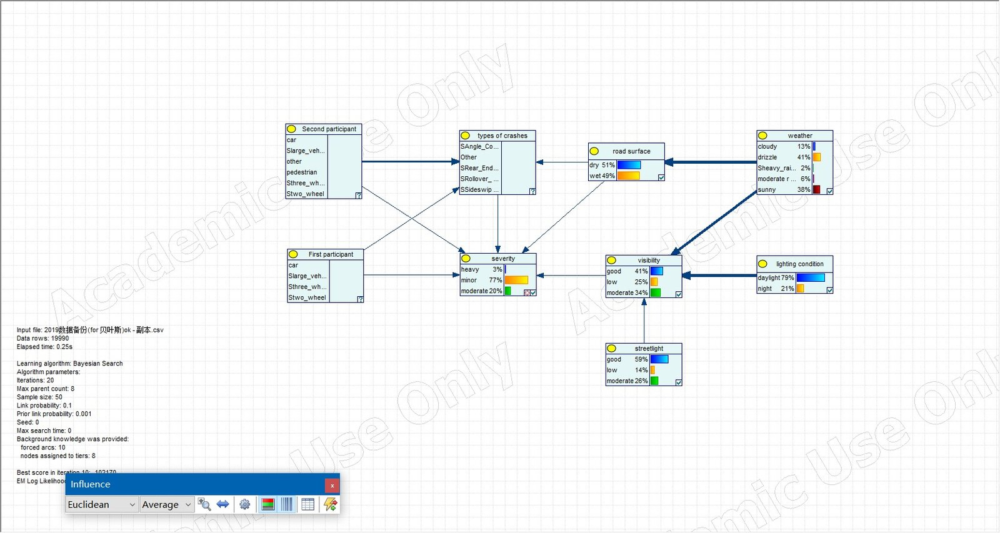
6 · Economics framework: one identity, three concepts, seven recommendations
In the 2026 rebuild I replaced the 2023 framework. The old framework was "feature analysis + identification of contributing factors". The new one is an identity from road safety economics. The identity itself adds no new information. Its value is that it maps each policy tool to one dimension. It also explains one point: cutting severity where crashes already concentrate gives the highest return.
The identity
exposure × risk × severity × unit cost Sources: Hakkert 2002; Elvik 2009. i is any stratum, such as a segment, a time period, or a combination of road users. E is exposure, such as vehicle-kilometers, person-kilometers, or trips. N is the crash count. K is the number of casualties. C is cost.
| Dimension | Policy tools | Evidence from this project |
|---|---|---|
| Exposure E | Land use, demand management, diverting through traffic, mode shift | Phase 2: VKT explains most of the "excess on through arterials". In the 2035 policy scenario, a 5-point drop in car share avoids half of the crash increase. |
| Risk N/E | Road design, speed management, access management, intersection channelization | SHAP: a physical median is the only negative variable. EB excess crashes concentrate on the Wuda Line and Heyan Road Section 2. VISSIM: a protected left turn cuts crossing conflicts by 79%. |
| Severity K/N | VRU protection, 30 km/h speed limits, heavy-vehicle management | Vulnerable road users are in 26% of crashes but account for 79% of casualties. Heavy vehicle × pedestrian: 2.04 casualties per crash. |
| Unit cost C/K | Emergency response, medical care, insurance | Not covered in this project |
The marginal benefit of an intervention = the term it changes × the other three terms. Hot-spot corridors already have high exposure and high risk. Cutting severity there gives the largest product.
Three economic concepts
Severity and speed
Collision energy ∝ v². A pedestrian hit at 30 km/h has about a 10% fatality risk. At 50 km/h the risk is > 80% (Elvik 2013; ITF 2016). Nilsson's power model: injury crashes ∝ v2, fatal crashes ∝ v4. A 10% speed cut → about −19% injury crashes. A 30 km/h limit in VRU-dense areas changes both "whether a crash happens" and "how severe it is". It is the only measure that does both.
Social cost scenario estimate
Principle: crash cost = injury cost + property damage and administrative cost + indirect costs such as congestion (Elvik 2009; Viscusi & Aldy 2003). Injury cost covers VSL, medical care, lost work and pain. VSL is the value of a statistical life, estimated from willingness-to-pay studies. China has no official VSL standard. Values in the literature range from several hundred thousand to several million yuan.
| Severity | Crashes | Unit cost, low (RMB 10k / crash) | High | Total, low (RMB 100 M) | High |
|---|---|---|---|---|---|
| Minor 77% | 15,390 | 0.5 | 1.5 | 0.77 | 2.31 |
| Moderate 20% | 4,000 | 5 | 15 | 2.00 | 6.00 |
| Severe 3% | 600 | 50 | 150 | 3.00 | 9.00 |
| Total | 19,990 | 5.8 | 17.3 | ||
| Share of 2019 GDP (about RMB 56 billion) | 1.0% | 3.1% |
Result: RMB 0.6–1.7 billion, ≈ 1–3% of GDP. This matches the WHO benchmark of "about 3%". Severe crashes are only 3% of crashes but account for more than half the cost. Crashes involving vulnerable road users are a quarter of crashes but account for about three quarters of the cost.
Limitations: the unit costs are scenario assumptions, not Xichang measurements. The GDP of RMB 56 billion is approximate. The result shows only the order of magnitude and the structure. Do not cite it as a precise figure.
Paths to internalization and seven recommendations
There are three kinds of internalization tools. Prices: insurance premiums tied to exposure or risk, distance-based charges, truck entry fees. Prices are optimal in theory but hardest to apply at the local level. Regulation: speed limits, truck restrictions, right of way. Regulation depends on enforcement. Environment: narrower lanes, physical medians, raised crossings, tighter intersections. The environment needs one investment and works for a long time. It is the core of the Safe System approach. A fourth tool acts on future externalities: traffic impact assessment in land-use approvals. The seven recommendations are ranked by expected crash cost avoided / implementation cost. Effect sizes come from international handbooks.
- Make the high-density core cells (top 10%, about 5 km²) a 30 km/h zone, with raised crossings, tighter intersections and refuge islands. Basis: vulnerable road users account for 79% of casualties; Gi* hot-spot cells (13% of cells) hold 65% of crashes. Effect: speed −10% → injury crashes −19%.
- Heavy-vehicle management and station-area traffic organization: truck time windows and routes in the core, right-turn blind-spot treatment, and pedestrian–vehicle separation in front of the railway station. Basis: heavy vehicle × pedestrian, 2.04 casualties per crash; within 0.5 km of the railway station, crashes per unit of activity are twice the city average.
- Physical medians, access management and speed limits on through arterials; intersection channelization on secondary roads in the old city. Basis: a physical median is the only attribute in the model that lowers crashes systematically. Revised after Phase 2: invest first in the Wuda Line, Heyan Road Section 2 and the Chang'an Road family, not in the full length of Hangtian Avenue. Effect: injury crashes −20–40%.
- Add traffic safety assessment and development conditions to land-use approvals. Basis: office density shows a threshold effect; crashes concentrate within 1–3 km of hubs.
- Treat physical risk under heavy rain: drainage, skid-resistant pavement, signs at ponding points, and arterial control during rainstorm warnings. Basis: heavy rain RR 1.15 (1.03–1.29).
- Curve and grade engineering on the rollover corridors (G5 Jingjiu section, G348 Heyan section): speed limits, roadside barriers, markings. Basis: rollover self-colocation CLQ 8.63; rollovers cluster on their own outside the city.
- Build the exposure denominator: traffic volumes, an injury severity scale, and geocoded police reports. Use EB for network screening. Phase 2 has partly done this with a sketch-level model.
Not recommended, three things: general rainy-day publicity campaigns; "safety awareness" campaigns aimed at pedestrians and cyclists; and new wide arterials in the low-density periphery. The last one would copy the "wide roads are more dangerous" pattern.
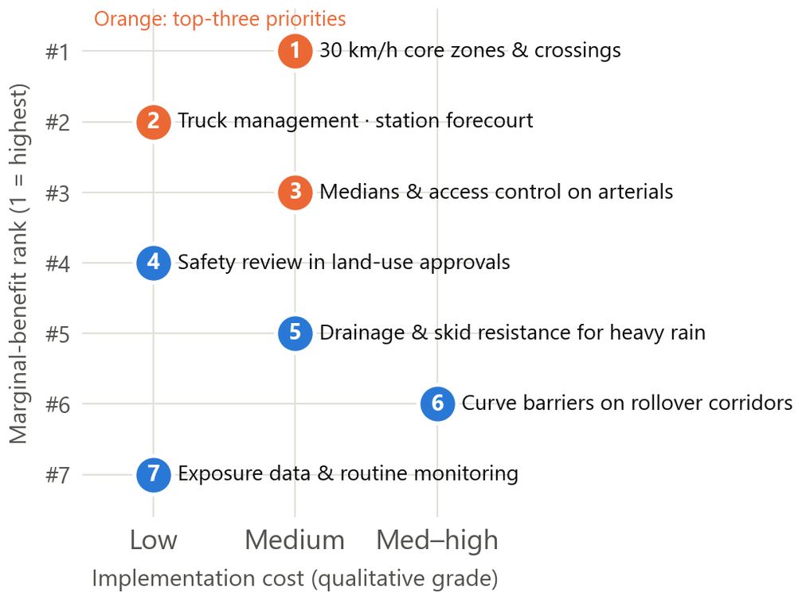
Statistical models: quick reference
- Poisson regression: ln μ = Xβ, Var = μ. Crash data are often overdispersed.
- Negative binomial regression (NB2): Var = μ + αμ². The HSM writes μ + kμ², where k is the overdispersion parameter. As α → 0 it reduces to Poisson.
- Pearson residual z = (y − μ̂) / √Var̂. |z| > 2 flags roughly the 95% outliers.
- Rate ratio RR and its CI: se(ln RR) = √(1/a + 1/b).
- Garwood exact Poisson interval: [χ²0.025(2k)/2n, χ²0.975(2k+2)/2n].
- Log elasticity: ln μ = β0 + β1 ln x → β1 = elasticity.
- GEH = √(2(M − C)² / (M + C)). GEH < 5 counts as a good match.
Three comments from the 2023 defense review, and my responses
- "Maps should show the road network" → I redrew every map on OSM, with rail, water and hubs.
- "The concept is a quotient, not an entropy" → The text uses CLQ throughout, with a definition in the appendix.
- "Analyzing only land-use types and clusters is too broad; go down to road characteristics" → I moved the road class / lane / form / median analysis into the main line. I reinterpreted the POI associations as differences in speed environment. The recommendations now name specific roads and engineering measures. Phase 2 goes further, down to segment-level EB rankings and specific intersections.
7 · Why Phase 2: the missing denominator
Phase 1 mapped 20,000 crashes. It answered "where" crashes happen, but not "why" they happen there. The reason: there were no traffic volumes. Without volumes, "many crashes" and "many vehicles" look exactly the same in the data. Phase 2 has one purpose: to supply exposure, the denominator.
The core identity
Without E, you cannot tell the two problems below apart. They call for completely different responses:
US practice is set out in Chapter 4 (network screening) of the Highway Safety Manual (HSM). It first builds a safety performance function (SPF) with AADT as exposure. An SPF predicts how many crashes a road should have, given its traffic volume. Then it screens the network with Empirical Bayes (EB). Recommendation 7 of the Phase 1 report was "build the exposure denominator and use EB for network screening". But at the time this was not possible.
Which Phase 1 findings this undermines
| Phase 1 finding | Problem caused by missing E |
|---|---|
| KDE / Gi* hot spots; top 15 roads ranked by crash count | The ranking measures "many crashes", not "dangerous". High-volume arterials rank high by default. |
| §6.4 negative binomial residuals: through arterials (Wuda Line G348, Hangtian Avenue, First Ring Road, Dangui Bridge) have crashes "above what activity predicts" | The model used POIs as the only proxy for activity. It could not see through traffic. The so-called "excess crashes" may just be unobserved traffic volume. |
| SHAP: road class and lane count have positive effects on crash counts | The exposure channel (wide roads carry more vehicles) and the risk channel (vehicles drive faster on wide roads) are mixed. The model cannot separate them. |
What Phase 2 did
Four research questions (as worded in the report)
- Q1 Travel patterns: how do Xichang residents travel each day, how far, and by which mode?
- Q2 Network loading and robustness: which segments are overloaded in the AM peak? Are the findings sensitive to parameters?
- Q3 Safety exposure: after controlling for traffic volume, do through arterials still show excess crashes? How do rankings change by crash rate and by EB? (core output)
- Q4 2035: with population growth and a development boundary, how do VKT and crashes change?
"Phase 1 mapped 20,000 crashes. It had no exposure denominator. So I could not separate 'many crashes' from 'many vehicles'. I built a four-step model to supply that denominator. I back-cast it to 2019. Then I re-ran the safety screening with vehicle-kilometers as exposure. The ranking flipped."
Xichang has no household travel survey and no segment traffic counts. So the model is not calibrated to traffic counts. In the terms of the FHWA Travel Model Validation and Reasonableness Checking Manual, what I did is a reasonableness check and a sensitivity test, not validation. Exposure covers motor vehicles only. E-bikes carry one third of trips, but they were not assigned to the network. Yet vulnerable road users suffer the most casualties.
8 · The four-step travel demand model
The four-step model is the standard framework for regional transportation planning at US MPOs and DOTs. It has been in use for about sixty years. The four steps answer four questions. How many trips does each zone produce and attract (trip generation)? Where do they go (trip distribution)? Which mode do they use (mode choice)? Which route do they take (traffic assignment)? Congested times from assignment feed back into distribution. The loop repeats until the results are stable.
Click a box to jump to its section. There are three trip purposes: HBW (home-based work, including the return trip), HBO (home-based other, including school) and NHB (non-home-based). I wrote trip generation through mode choice myself in Python / numpy. Skims and traffic assignment use AequilibraE.
Data and zone system
Population: ESSD 100 m grid
The census reports only at the township / subdistrict level: 25 units and 955,000 people. That is far coarser than traffic analysis zones (TAZs). Chen et al. (2024, ESSD) used ensemble learning to downscale the 7th census to a 100 m grid. The township census counts constrain the downscaling. I summed each grid cell's population into the zone that contains it. The city-wide grid total differs from the census by only 0.19%. The base year scales up to an estimated 975,000 in 2025. The 2019 year uses 99% of the 2020 grid.
TAZ design (52 internal + 14 external)
If zones are too coarse, all intrazonal trips are lost and never reach the network. If zones are too fine, the parameters cannot support them, and centroid-connector artifacts grow. The rules: cut the area into blocks along arterials, railways and rivers. No zone straddles an expressway, railway or water body. Zones have similar population. I split oversized units once more, along local streets or with population-weighted k-means. I merged the smallest units greedily into their "cheapest" neighbor. The result is 52 internal zones with a median population of 7,900. The 14 external zones are 11 road external stations, Qingshan Airport, Xichang Station and Xichang West Station. Xichang West Station opened at the end of 2022, so it is active in the base year only. About 310,000 hinterland residents live outside the study area but inside the model extent. I assigned them to their nearest external station. Their city-bound trips are generated at that station.
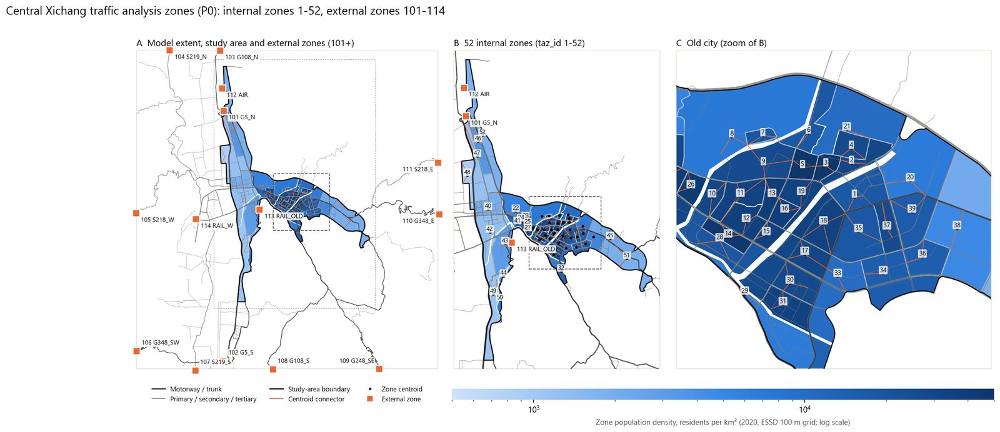
Network: OSM functional class → capacity and speed
The supply side needs each link's length, direction, lane count, capacity (pcu/h), free-flow speed and volume-delay function parameters. In OSM only 21% of links have a lane count, and none has a speed limit. So I assigned default values by highway class from Chinese design standards:
| OSM class | Lanes per direction | Capacity pcu/h/lane (low–base–high) | Free-flow km/h | Source |
|---|---|---|---|---|
| motorway (expressway) | 2 | 1,600 – 1,800 – 2,100 | 90 | JTG B01-2014 |
| trunk (national road / urban expressway) | 2 | 850 – 1,400 – 1,800 | 50 | CJJ 37-2012 Table 4.3.2 |
| primary (major arterial) | 2 | 800 – 1,350 – 1,700 | 40 | CJJ 37 |
| secondary (minor arterial) | 2 | 780 – 1,300 – 1,650 | 32 | CJJ 37 |
| tertiary (local road) | 1 | 700 – 1,100 – 1,600 | 25 | CJJ 37 |
| *_link (ramp) | 1 | parent class × 0.8 | parent class × 0.6 | CJJ 37 3.2.3 |
The low value is about 0.6 × design capacity. This reflects the green-time reduction at signalized intersections. Free-flow speed is about 0.8 × design speed. The base-year network has 1,500 links and 876 km (a divided road counts as two one-way links).
How I back-cast the 2019 network
I used an Overpass attic query (date:2019-12-31) to get historical OSM. The difficulty is that Xichang's 2019 OSM was very incomplete. 38% of today's main roads were not yet mapped. So "missing from 2019 OSM" is not a reason to delete a road. I used four steps. First, for each base-year link I computed how much of it lies inside a buffer around 2019 major roads. Links with low coverage became candidates. Second, I pulled the way history. Third, I grouped candidates by project and looked for positive evidence for each one: opening news, government notices, the 14th Five-Year Plan, or OSM construction tags. From that I labeled each project built_after_2019 or existed_mapped_later. Fourth, I recorded the evidence and confidence in a CSV. I removed 9 projects totaling 134 km. Examples are the North Ring Road (opened November 2020), the Caizishan Avenue western extension (2021), the Ningyuan Avenue western extension (2022) and the Xichang West Station district roads. I also removed 20 km of links left dangling by these removals. The 2019 network has 1,245 links and 723 km. Link IDs are unchanged, so the two years compare directly.
Counting note: the network difference is best stated as "9 projects, about 134 km removed", not as a link count. The 1,500 − 1,245 = 255 link difference also includes dangling links.
① Trip generation
Method
Trip generation estimates each zone's productions Pi (home end) and attractions Aj (non-home end). Productions usually come from a trip rate: population × daily trips per person × purpose share. Cross-classification is another option. Attractions come from employment or floor area × an attraction rate. For each purpose, ΣP must equal ΣA. So attractions are balanced to the production total, because home-end data are more reliable. For NHB neither end is at home, so P = A, distributed by non-residential activity.
This project
r = 2.5 trips/person·day (low 2.1 / high 2.8) sHBW = 0.40 sHBO = 0.50 sNHB = 0.10
Ajpraw = Σc POIjc · wpc → Ajp = Ajpraw / ΣApraw × ΣPp The trip rate comes from the commentary to GB/T 51328-2018. The Guilin 2017 survey (2.13) and the Yixing 2002 survey (2.75) set the low and high values. Chinese surveys count "going home" as its own purpose. Here the return trip takes the purpose of the outbound trip. So HBW ≈ 2 × the commute share. NHB is set at 10%. The US value in NCHRP 716 is about 30%, which does not fit a small Chinese city.
There are two sets of attraction weights wpc. HBO / NHB use the median peak-hour person trips per 100 m² of floor area from CJJ/T 141-2010 (retail 15, restaurants 10, schools 12, hospitals 7.5, offices 3, residential 1.6). HBW uses employment proxy weights (offices 1.0, health / education 1.5, retail / restaurants / services 0.3, residential 0).
External travel has three parts. First, hinterland trips into the city: hinterland population × r × city-bound share 0.25. Second, road traffic at external stations: G5 through traffic + through traffic across the city + traffic into and out of the city, balanced with IPF. Third, ground access to the airport and railway stations.
Result: 1.174 million person trips per day (HBW 470,000 / HBO 587,000 / NHB 117,000). Hinterland residents make 38,700 vehicle trips into the city per day. External and hub traffic adds 57,800 vehicle trips.
Limitation: the POI weights are defined per floor area but applied to POI counts. This assumes POIs of each type have similar average size. As a result, large employers are underestimated and dense clusters of small shops are overestimated. The trip-purpose split is borrowed from Yixing / Guilin.
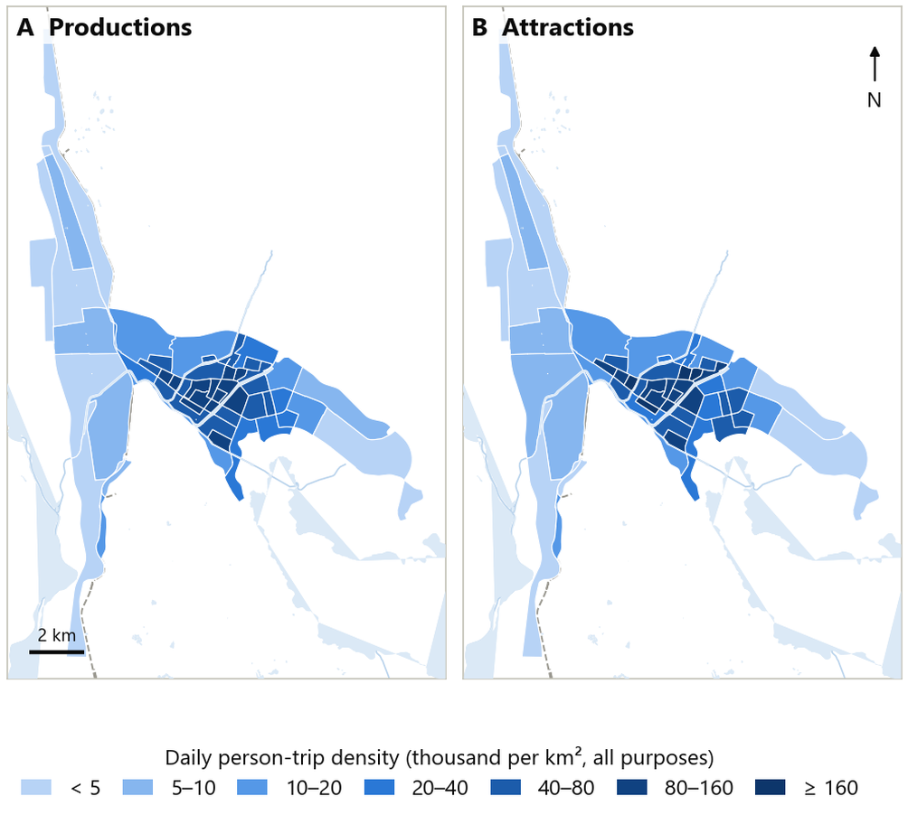
② Trip distribution: doubly constrained gravity model
Method
Trip distribution turns Pi and Aj into an OD matrix Tij. The gravity model is an analogy to Newton's law of gravity. Trips are proportional to the size of both ends and decline with impedance cij. A doubly constrained model requires row sums = Pi and column sums = Aj:
ai = 1 / Σj bj Aj f(cij) bj = 1 / Σi ai Pi f(cij) a and b depend on each other. So they are solved by Furness / IPF (iterative proportional fitting). Set b = 1 and solve for a. Then use a to solve for b. Repeat until the column sums differ from A by < 1e-7.
There are three common friction (deterrence) functions: negative exponential f = e−βc, power f = c−γ, and gamma f = a·cb·ec₀c (NCHRP 716). Calibration usually targets the trip length frequency distribution (TLFD) or the mean trip length. Without a survey, only the mean can be targeted.
This project
- Impedance cij = zone-to-zone congested car travel time (minutes). All modes share this one impedance. This is a sketch-level simplification. Intrazonal impedance = 0.5 × the time to the nearest neighboring zone. AequilibraE computes the skim matrix by shortest path. Paths may not pass through centroids.
- f = e−βt. There is no observed TLFD. So I solved for β by bisection, so that the mean trip distance equals a target. Targets: HBW 4.5 km, HBO 3 km, NHB 3 km. The HBW target comes from GB/T 51328: in cities of 0.5–1 million people, the mean commute distance is ≤ 5 km. Note that impedance is in time but the target is in distance. That is because the standards and surveys give distances.
- Calibrated values: βHBW = 0.0375 /min, βHBO = 0.230, βNHB = 0.220. Non-work trips are about 6 times more sensitive to time, so they are shorter.
Result: 54% of trips are shorter than 3 km, and 9% are longer than 8 km. Intrazonal trips are 7.5%. The mean HBW car time is 8.4 minutes.
Limitation: the negative exponential function fixes the "shape" of the distribution. Only the mean is constrained. Walk and bike trips use car time as impedance, which understates their cost.
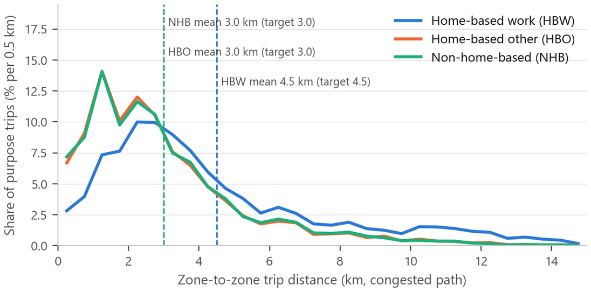
③ Mode choice
Method
The standard approach is a discrete choice model (multinomial or nested logit): Pm = eVm / Σ eVk. The utility Vm combines time, cost and a mode constant. Estimating the coefficients needs a travel survey. Without a survey, the fallback is fixed mode shares or shares by distance band.
Why not logit
Xichang has no household travel survey. No utility coefficient can be estimated. Coefficients borrowed from other cities cannot have their constants calibrated either. So I used "fixed total shares + allocation by distance":
So the total shares are a scenario input. The model only decides where each mode is used. Vehicle trips = car person trips / 1.4 occupancy + taxi person trips / 1.4 × 1.3 empty-running factor. E-bike OD is output separately and not assigned to the motor-vehicle network. Transit is not assigned either.
Result: within 1 km, 73% of trips walk. From 2 to 6 km, e-bikes carry 40%. The car share is 7% within 2 km and 42% above 8 km. The e-bike share of one third matches the 33.2% in the Guilin 2017 survey. The 65% walk-and-bike share meets the GB/T 51328 target of "≥ 60% for medium-sized cities".
Limitation: mode shares are the least certain parameters in the model (car 11%–26%). Guilin is the only reference in southwest China. So I use scenarios instead of estimates.
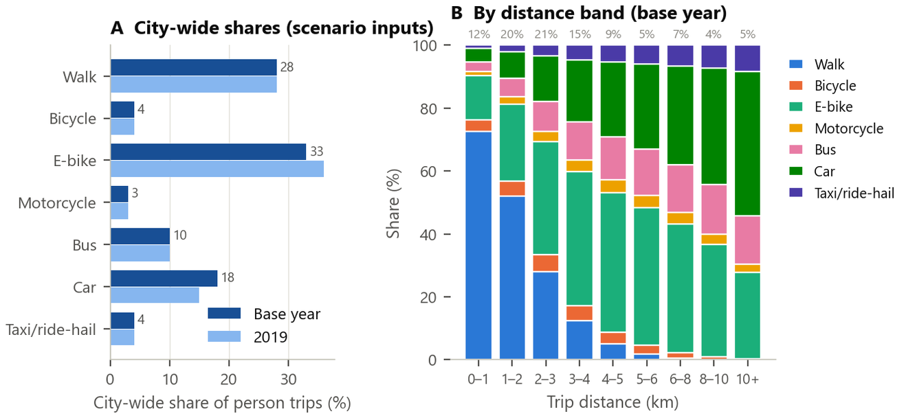
④ Time of day and traffic assignment
Time of day
I assign only the AM peak hour. I build the AM peak OD from the daily PA matrices with departure-from-home and return-home peak factors (HBW from home 0.30, HBO from home 0.12, …). Then I scale everything so that the person-trip-weighted AM peak share = 0.15. References: Yixing 20.1% for 7–8 a.m.; the US 7.9%. Daily volume = AM peak / K. K is the ratio of network-wide AM peak VKT to daily VKT. This assumes every link has the same daily profile.
User equilibrium (UE)
Wardrop's first principle: at equilibrium, all used paths between an OD pair have equal travel time. That time is no greater than the time on any unused path. No traveler can cut their own time by switching routes alone. Beckmann showed this is equivalent to a convex optimization problem:
BPR function: ta(xa) = ta0 · [1 + α (xa / Ca)β] α = 0.15, β = 4 α and β are the original 1964 BPR values. NCHRP 716 Table 4.26 gives an average α of 0.42 and β of 5.2 for arterials in metro areas of 0.5–1 million. I use those as the high sensitivity case. Centroid connectors have α = 0 and β = 1, so their time does not change with volume.
Frank–Wolfe and bi-conjugate Frank–Wolfe
- Compute ta(xn) at the current volumes xn. Run an all-or-nothing (AON) shortest-path assignment to get the auxiliary flow yn.
- Line-search λ ∈ [0,1] to minimize Z(xn + λ(yn − xn)).
- xn+1 = xn + λ(yn − xn).
Classic FW zigzags near the optimum and converges slowly. Bi-conjugate FW (BFW) combines the descent direction with the previous two directions as conjugates. This speeds up convergence greatly. AequilibraE's bfw reaches 1e-4 in 41 iterations. The classic FW in TransCAD 4.5 ran about 300 iterations and stopped at 1.6e-4.
Relative gap
Feedback
The times used in distribution should equal the congested times after assignment. So I loop 3 times. Round 1: free-flow skim → gravity → mode → time of day → UE → congested skim. The congested skim is averaged with the previous round by MSA (method of successive averages), then round 2 starts. And so on. The RMSE change in the AM peak car OD falls from 4.0% in round 2 to 1.2% in round 3.
Assignment settings
There are 4 vehicle classes (multi-class): car, hinterland, ext_hub (pce 1) and ext_road (pce 1.5, many trucks). They share one volume-delay function, so the equilibrium in total pcu is unique. The algorithm is bfw with an rgap target of 1e-4.
Results: Xichang in the AM peak
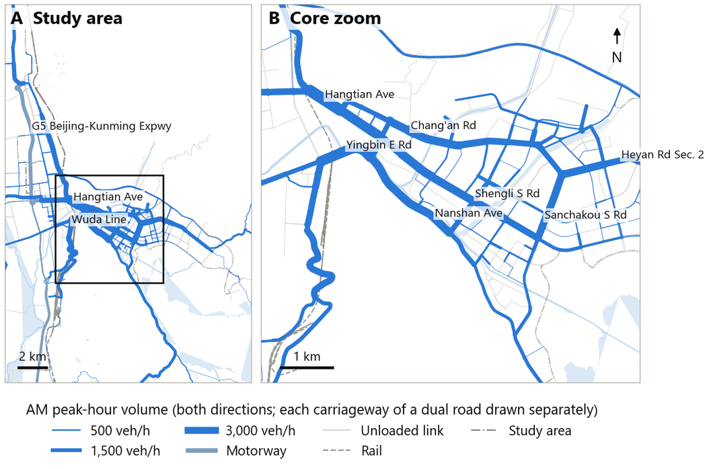
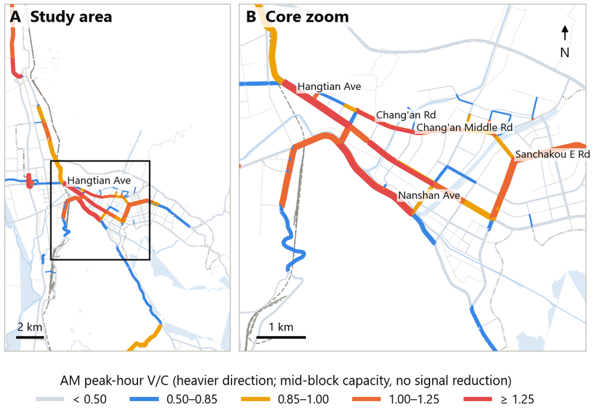
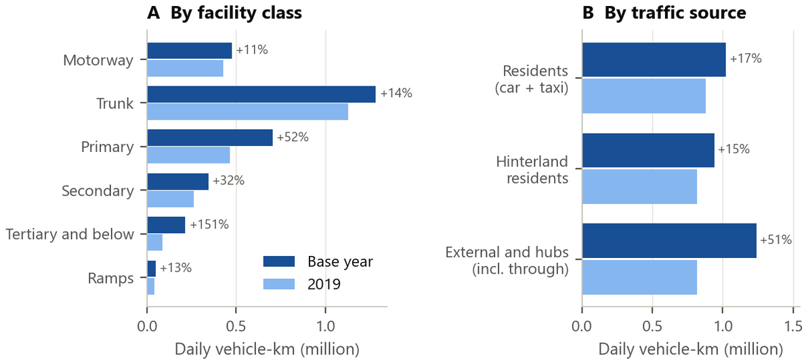
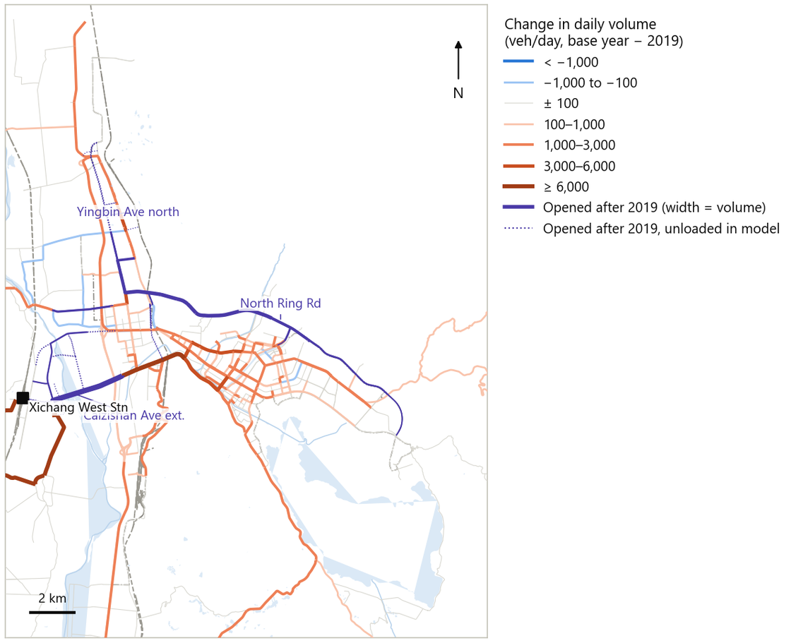
"I zoned the city into 52 internal and 14 external TAZs from a 100 m census grid. I coded an OSM network with capacity and speed by functional class. I generated trips with rates from national standards and small-city surveys. I distributed them with a doubly constrained gravity model fitted to a target mean trip length. I applied distance-banded mode shares, because no survey existed to estimate a logit. I assigned the AM peak with bi-conjugate Frank–Wolfe user equilibrium to a relative gap of 1e-4. I fed congested times back to distribution three times. There were no counts, so I spent as much effort on sensitivity as on the base run."
- All behavioral parameters are borrowed, from standards, the Yixing / Guilin surveys and NCHRP 716. There is no local survey.
- Only the AM peak hour is modeled. The midday return-home peak common in small Chinese cities (Yixing 11 a.m.–12 p.m.: 10.4%) is not modeled.
- E-bikes (one third of trips) and transit are not assigned to the network.
- Absolute V/C is not reliable, because capacity excludes signal reduction. It is used only for relative comparison.
9 · AequilibraE and TransCAD: who computed it, who replicated it
The main model runs on Python + AequilibraE. It is reproducible, free, and can batch-run the 47 sensitivity runs. TransCAD 4.5 is an independent replication engine. The question: with the same inputs in a different package, are the volumes the same? Yes, R² 0.9999. So the assignment results do not depend on one software implementation.
What AequilibraE is
AequilibraE is an open-source Python library for travel demand modeling. It has four main parts: network / graph (Graph) building; shortest paths and skim matrices (NetworkSkimming); multi-class static traffic assignment (all-or-nothing, MSA, Frank–Wolfe, conjugate FW, bi-conjugate FW); and BPR-type volume-delay functions, select-link analysis and the OMX matrix format. It plays the role of the "assignment engine" in TransCAD / Visum / Cube. It has no GUI and no built-in gravity model or mode choice. I wrote those two steps myself in numpy.
Role in this project
- Build an AequilibraE project from
links.gpkg. One each for the base year, 2019 and 2035. - Skims use Graph.
set_skimming(["time","distance"])gets time and distance.set_blocked_centroid_flows(True)stops paths from passing through centroids. - Assignment: one TrafficClass per vehicle class.
set_vdf("BPR")reads per-link α / β fields.set_algorithm("bfw"), with an rgap target of 1e-4. - Select-link analysis gives intersection turning movements. VISSIM uses these volumes.
Environment note: AequilibraE needs pandas 3. That conflicts with the geopandas environment. So I keep it in its own venv. The pipeline switches between the two interpreters.
TransCAD basics
- TransCAD is Caliper's GIS-based transportation planning package. It is one of the main tools at US MPOs, alongside Cube, Visum and EMME.
- Data structures: a geographic file (.dbd) holds a line layer and a node layer. Line endpoints automatically form the node layer. A network (.net) is built from the line layer. It holds direction fields (AB / BA field pairs match automatically), length, time and capacity. A matrix (.mtx) holds several cores and indices.
- Centroids: Network Settings defines a selection set of centroid nodes. Paths may not pass through centroids. This is equivalent to blocked centroid flows in AequilibraE. Without this setting, results differ.
- Menu path: Networks/Paths → Create / Settings / Multiple Paths gives the skim matrix. Planning → Trip Distribution → Gravity Evaluation, doubly constrained, with Exponential / Gamma / Power impedance. Planning → Traffic Assignment, Method = User Equilibrium, with Time field, Capacity field, Alpha / Beta, Iterations and Convergence.
- GISDK: TransCAD's scripting language (Caliper Script).
RSCC.EXEcompiles macros into a UI database.tcw.exe -a <ui> -ai "<macro>"launches it from the command line. Batch procedures are called withRunMacro("TCB Run Procedure", …). They use the same code as the menu commands.
Python pipeline: one command
python scripts/run_all.py now 2019 [--sensitivity --lhs 20 --workers 4] [--set car_share=high ...]model_config.build_config(scenario, overrides) resolves all parameters into one JSON dictionary. Each behavioral parameter takes its value from params.csv. A value is either one of three levels (low / base / high) or a piecewise-linear interpolation on u ∈ [−1, 1]. All 47 sensitivity runs reuse exactly the same code.
TransCAD replication: how it works
One command, tc45_run.py --scenario now, runs five steps:
- prep: write
links.shpwith 1,500 links + 133 centroid connectors. Fields include T_AB / T_BA, CAP_AB / CAP_BA, ALPHA, BETA and others. Also writepa.dbfandod_fixed.dbf(66 × 66 cells) and generate a parameter macro. One-way links get T_BA = 9,999 min and CAP_BA = 99,999. The reason: GISDK 4.5 cannot write the topological Dir field. - compile:
RSCC.EXEcompiles the GISDK macro into a UI database. - assign: run
tcw.exe -q -a xc_ui -ai "XC Assign Only". It takes about 30 seconds and exits on its own. - full: run
"XC Full Chain". TransCAD runs gravity + mode + assignment itself. - collect: gather the CSVs. Join the link ID crosswalk. Produce comparison charts and a numbers macro.
What the GISDK macro does
- Build Network:
ImportArcViewShapeimports the shapefile. Centroid nodes are identified from the connectors.CreateNetworkincludes time, capacity, α and β fields.ChangeNetworkSettingsturns on Centroids. - Skim: Multiple Paths minimizes free-flow time. Checked against Python: difference ≤ 0.005 min.
- Assign:
TCB Run Procedure "Assignment". Load Method 5 = UE, Convergence 0.0001, Iterations 500. - Full Chain: Gravity is called once per purpose. The reason: in 4.5, running all three purposes in one call left HBO empty. Testing found this. Settings: Double constraint, Exponential impedance, c set to the Python calibrated value. TransposeMatrix gives the return trips. Matrix Fill builds the AM peak car OD, then UE runs.
Replication results
The acceptance criteria were set in advance: R² ≥ 0.99, %RMSE ≤ 5%, share with GEH < 5 ≥ 95%, pcu-km difference within ±1%.
| Measure | Assignment only (same OD) | Full chain (TransCAD runs its own gravity + mode) |
|---|---|---|
| R² | 0.9999 | 0.963 |
| Slope through origin | 1.000 | 0.813 |
| %RMSE | 1.7% | 51.5% |
| GEH < 5 | 99.7% | 80.8% |
| pcu-km difference | +0.02% | −13.8% |
| Relative gap | 1.6e-4 (classic FW stops improving after about 300 iterations) | 2.9e-4 |
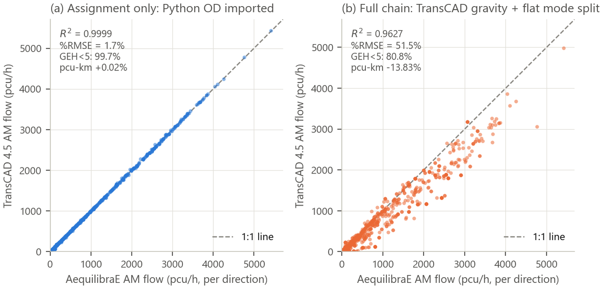
Why assignment only gives 0.9999 but the full chain only 0.963
- Assignment only: both sides use identical OD, network and volume-delay functions. Differences come only from the algorithm and convergence. TransCAD's classic FW stops at 1.6e-4. AequilibraE's BFW reaches 0.9e-4. The differences sit on low-volume links. Three intermediate checks agree: free-flow skims differ by ≤ 0.005 min; no flow passes through centroids; one-way links carry zero reverse flow.
- Full chain: the TransCAD version has two deliberate simplifications. First, mode choice uses one flat share instead of distance bands. Second, there is no distribution–assignment feedback. The flat share cuts AM peak car trips by 7% and raises the share of short trips. So pcu-km is 13.8% lower.
- Another technical cause lies in the skim matrix. The exported skim is the one after the last feedback MSA averaging. Python's final distribution used the skim before averaging. HBO / NHB have a large β and are sensitive to impedance, so their trip tables differ by 20%. HBW differs by only 1%. I checked TransCAD's gravity model against a numpy Furness run with the same skim and the same β. Cell by cell, they differ by ≤ 0.005 trips. So the gravity model implementations agree.
- Conclusion: the results do not depend on the software implementation. The distance-banded mode choice and the feedback in the Python model change link volumes materially. They are not negligible details. I documented the causes of the gap in the report instead of reporting only 0.9999.
"I used TransCAD 4.5 as the replication engine. A GISDK macro builds the network with a centroid set. It then runs Multiple Paths, Gravity and UE Assignment. I compiled it with RSCC and launched it from Python, so the whole run is one command. Assignment-only replication matched AequilibraE to R² 0.9999. The full chain matched less well, R² 0.96. That is because I simplified mode split and dropped feedback in the TransCAD version on purpose. I documented why instead of hiding it. The version is old. But the concepts carry straight over to TransCAD 9/10, Cube or Visum: network layer, centroid set, UE dialog."
10 · Checking a model without counts: reasonableness, 47 sensitivity runs, replication
How do you check a model with no traffic counts? I use three layers. Reasonableness: do the intermediate quantities fall within ranges from comparable cities and standards? Sensitivity: 47 full runs test whether the conclusions are robust. Replication: an independent re-run in TransCAD. One point matters: this is not validation.
Three concepts from the FHWA manual
The Travel Model Validation and Reasonableness Checking Manual, 2nd ed. (Cambridge Systematics for FHWA / TMIP, 2010) separates three concepts:
Xichang has no counts and no surveys. So this project does only the last two. I do not call it validation.
Layer 1: reasonableness checks
| Step | Metric | Model | Reference | Assessment |
|---|---|---|---|---|
| Generation | Daily trips per person | 2.5 | 2.1–2.8 | Reasonable (by construction) |
| Daily trips per household | 6.5 | 5.5–7.3 | Reasonable | |
| HBW / HBO / NHB | 40 / 50 / 10 | 35–45 / 45–55 / 5–15 | Reasonable (input) | |
| Distribution | HBW mean distance | 4.5 km | 3.5–5.5 | Reasonable (calibration target) |
| HBO / NHB mean distance | 3.0 / 3.0 | 2–4 / 2–4.5 | Reasonable | |
| Intrazonal trips | 7.5% | < 15% | Reasonable | |
| HBW car travel time | 8.4 min | 13.6–22 (door to door) | Flag | |
| Mode | Walk + bike + e-bike | 65% | ≥ 60% | Reasonable |
| Mean walk distance | 1.57 km | 0.8–1.5 | Flag | |
| Mean e-bike distance | 4.0 km | 4.0–7.0 | Reasonable | |
| Assignment | Resident car VKT per person | 2.18 km/day | 1–6 | Reasonable |
| Loaded length with V/C > 1 | 6.8% | < 10% | Reasonable | |
| Relative gap | 8.9e-5 | ≤ 1e-4 | Reasonable | |
| OD change in last feedback loop | 1.2% RMSE | < 5% | Reasonable |
Layer 2: 47 sensitivity runs
13 parameters: trip rate, purpose split, car mode share, peak-hour share, through-traffic share, BPR α, BPR β, capacity level, external volume, trip-length target, vehicle occupancy, share of G5 traffic that exits into the city, and hinterland city-bound share.
- OAT (one-at-a-time): change one parameter to its low or high value. Keep the rest at base. That gives 13 × 2 = 26 runs. They show the direction and size of each parameter's effect (tornado chart).
- LHS (Latin hypercube sampling): sample all 13 parameters together, 20 times. Each dimension is split into n strata. One point is drawn at random within each stratum. The strata are then paired at random. LHS covers the parameter space with fewer samples than simple random sampling. It shows the range of results when parameters move together.
- With the base run, that makes 47 full four-step runs, including feedback. They ran on 4 parallel workers.
Spearman rank correlation
Results
- The largest effects on total VKT: external volume −15% / +19%, car share −15% / +16%, hinterland city-bound share ±12%. Trip rate and trip length come next. Under LHS, the 5–95% range of total VKT is 2.59–3.71 million (−19% / +16%). Two of the top three parameters concern traffic from outside the study area. That is exactly where the data are weakest.
- The largest effects on congestion (share of links with V/C > 1): capacity (13.8%–2.4%) and peak-hour share. They barely change VKT. BPR parameters and through-traffic share have small effects on both.
- Rank stability: of the 25 busiest links in the base run, 14 stay in the top 20 in ≥ 80% of runs. Of the top 15 corridors, 14 stay in the top 15 in ≥ 80% of runs.
- Policy implication: the best way to narrow exposure uncertainty is classified counts. Place them at the entry points and the main corridors into the city. Together they form a cordon line around the study area. They constrain external volume, hinterland share and car share at once.
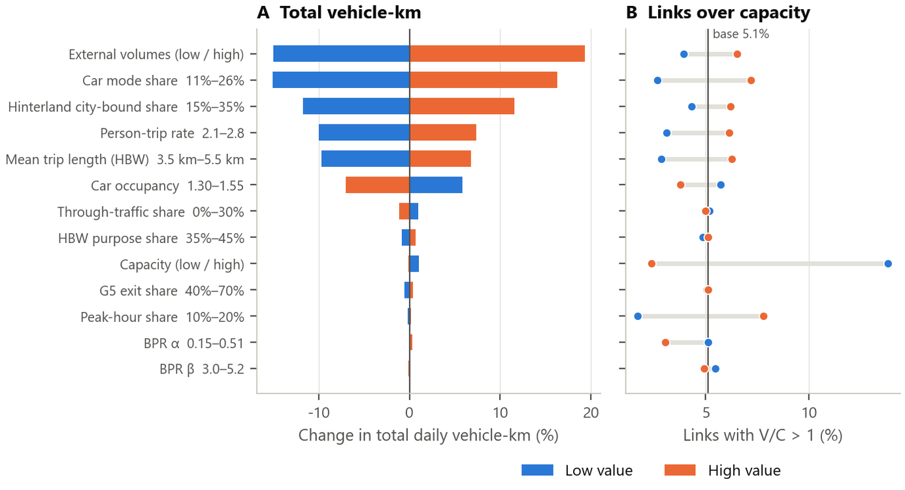
1.">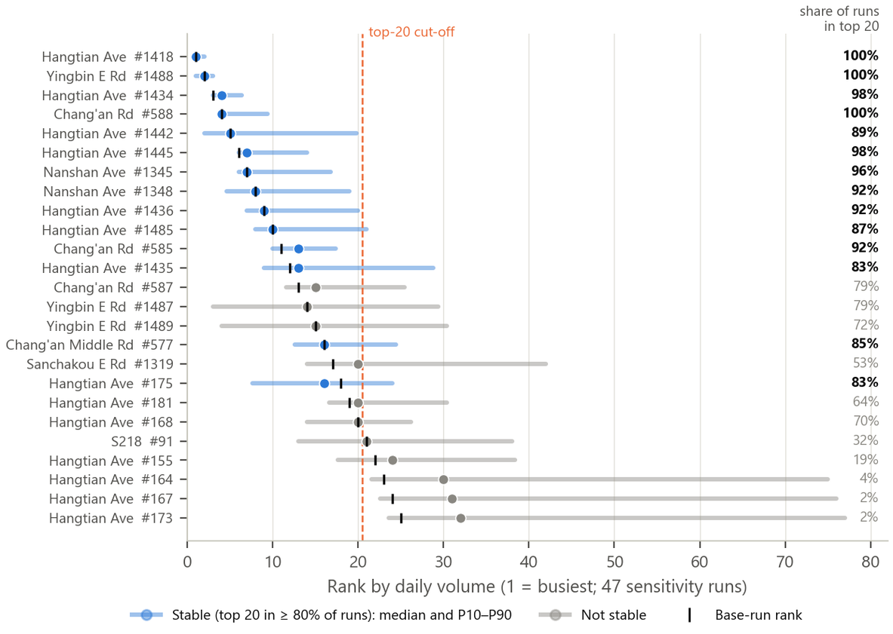
Layer 3: replication in TransCAD
I assigned the same OD in TransCAD 4.5. R² is 0.9999. See Section 9.
In progress: travel-speed check with AMap
Without counts, travel time is the only free independent observation. The AMap traffic-status API is closed to new users. So I use the AMap driving-route API to probe 40 two-way routes, 1.2–4 km long. Routes include the G5, Hangtian Avenue, Wuda Line, Haibin Middle Road and Nanshan Avenue. Each day has 24 time slots: every 15 minutes in the AM and PM peaks, plus 14:00 and 23:00 as controls. The plan is 14 days.
The test is fixed in advance: the Spearman rank correlation between the observed peak / late-night travel-time ratio and model V/C. I also check whether Hangtian Avenue, Nanshan Avenue and Chang'an Road are among the slowest observed. Pass criteria: ρ ≳ 0.4, p < 0.05, and the high-V/C corridors are the most congested in the observations. Then the relative congestion ranking passes. Otherwise the V/C ranking is unreliable. This is still not volume validation. It checks relative congestion only.
"Three layers. First, reasonableness. I checked per-capita VKT, trip length, mode shares, intrazonal share and V/C distribution. I compared them with comparable cities and NCHRP 716 ranges. Second, sensitivity. I made 47 full runs: 26 one-at-a-time and 20 Latin hypercube over 13 parameters. Link rankings had a median Spearman of 0.99. So I only report findings that hold across all runs. Third, replication. The same inputs in TransCAD reproduced the volumes to R² 0.9999. It is a sketch-level model. It is for ranking and scenario differences, never for absolute volumes. In an agency I would add screenline counts and %RMSE by volume class per the FHWA manual. I would also add a household survey for trip rates."
11 · Exposure adjustment: SPF, Empirical Bayes, and how the conclusion flipped
I have 2019 vehicle-kilometers traveled (VKT) for every link. With it, I can apply the standard HSM steps. Step 1: fit a safety performance function (SPF) for each road class. The SPF predicts how many crashes a road of that type "should" have, given its traffic. Step 2: use Empirical Bayes (EB) to weight the observed and predicted counts. This gives the excess crashes (PSI). Step 3: answer one question again. Are through arterials truly dangerous, or do they just carry more traffic?
Matching crashes to the 2019 network
I snapped 9,384 angle, rear-end and rollover crash points to the 2019 model network. I used three rules. Links within 30 m are candidates. A crash with ≥ 3 adjacent links within 25 m is an intersection crash. It goes to the approach link of the highest class. A mid-block crash goes to the nearest link. Result: 57% fall on model links (5,380 crashes). 20% fall on local streets and alleys. 22% are > 30 m from any road. Crash coordinates are coarse: there are only 1,992 distinct coordinates. So the unit of analysis is the corridor. A corridor merges links with the same name. Unnamed national and provincial roads are merged by route number. 640 links have volumes. They carry 4,342 crashes and about 878 million VKT per year. Of 182 corridors, 48 have ≥ 1 MVKT per year and are ≥ 0.5 km long. These 48 enter the ranking.
SPF: negative binomial regression
Principle: the safety performance function (SPF) is the core of the HSM. Given the road type and exposure, it predicts the expected number of crashes. Crash counts are overdispersed, so I use negative binomial regression (NB2):
μi = exp(β0) · MVKTiβ1 ⇔ ln μi = β0 + β1 ln MVKTi MVKT = daily VKT × 365 / 10⁶ β1 is the elasticity of crashes with respect to exposure. The literature usually gives 0.6–1.0 for urban arterials. A value < 1 means "safety in numbers": with more traffic, speeds drop and drivers stay more alert. k is the overdispersion parameter. Larger k means more dispersion.
| Class | Links | Crashes | MVKT/yr | β1 (s.e.) | k |
|---|---|---|---|---|---|
| Expressway | 26 | 69 | 169 | 0.26 (0.42) | 33.6 |
| National highway / trunk | 230 | 1,634 | 413 | 0.45 (0.07) | 5.5 |
| Primary arterial | 70 | 360 | 170 | 0.43 (0.23) | 9.3 |
| Secondary arterial | 165 | 1,256 | 95 | 0.31 (0.08) | 4.9 |
| Local and ramps | 149 | 1,023 | 32 | 0.00 (0.05) | 4.9 |
The elasticities are far below 1 for three reasons. I cannot separate them. First, model volumes have measurement error, which biases the elasticity toward zero (attenuation bias). Second, crash coordinates are coarse, so many crashes land on the link next to a landmark. Third, the true relationship is nonlinear. So I do not interpret the size of β1. I use the SPF only as an expected baseline for the same class and the same traffic.
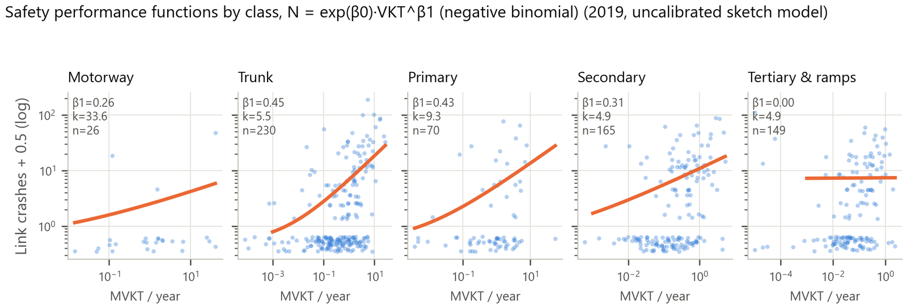
Empirical Bayes and PSI
Principle (Hauer 1997; HSM Chapter 4): observed crash counts fluctuate at random. They also show regression to the mean: a site with many crashes one year tends to have fewer the next. EB weights the observed count and the SPF prediction by their reliability:
NEB = w · μ + (1 − w) · Nobs
Excess (PSI, potential for safety improvement) = NEB − μ Larger μ or larger k gives a smaller w. A smaller w puts more trust in the observed count. PSI answers one question: "How many more crashes does this road have than roads of the same class and traffic?" Engineering treatments can reduce exactly this part. HSM network screening recommends ranking by EB excess, not by crash count or crash rate.
Three screening measures
| Measure | Strength | Weakness |
|---|---|---|
| Crash count | Intuitive | Automatically favors high-volume roads |
| Crash rate (crashes / million VKT) | Corrects for exposure | Goes to the other extreme. Short streets with a few dozen crashes and tiny exposure get inflated rates (Wenhui Road 55.7, Fengqingyuan Road 39.7). And small exposure is exactly where a model not calibrated to traffic counts is least reliable |
| EB excess | Combines both and damps small samples | Here k ≈ 5 is large. EB excess ≈ observed − predicted |
Through-arterial test: grid model before and after
This card tests whether "through arterials are dangerous" holds. First I reproduced the Phase 1 model exactly on the 250 m grid (619 cells): crashes ~ ln(1 + POI). The coefficients and the 33 excess cells match exactly. Then I added two variables: ln(1 + daily VKT / 1000) and a dummy for "no model link in the cell." Finally I added a through-arterial dummy and checked its IRR (incidence rate ratio):
| POI only | + ln(VKT) | Range over 47 runs | |
|---|---|---|---|
| ln(1 + POI) elasticity | 0.65 (0.04) | 0.53 (0.05) | — |
| ln(1 + VKT/1000) elasticity | — | 0.53 (0.10) | 0.46–0.62 |
| Log-likelihood | −1,650.1 | −1,599.6 (+50.6) | — |
| Excess cells z > 2 | 33 (1,484 observed / 204 expected) | 25 | 23–26 |
| Original 33 still z > 2 | 33 | 18 | 18–19 |
| Of which on through arterials | 13 | 8 | — |
| Through-arterial dummy IRR | 2.68 (p < 10⁻⁶) | 1.22 (p = 0.28) | 1.19–1.28; p 0.18–0.34 |
Three findings: (1) Traffic volume itself has strong explanatory power. The POI elasticity drops. Part of what Phase 1 credited to "activity" was actually traffic. (2) "Through arterial" as a category is no longer significant. It is not significant in any of the 47 runs. (3) The excess at specific sites remains. Examples are several cells on Wuda Line, Hangtian Avenue and Dangui Bridge. The risk belongs to sites, not to a road category.
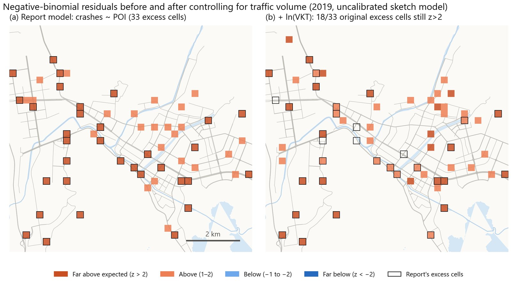
Rank changes: who moved up, who moved down
Spearman correlations between the three rankings: count–rate 0.63, count–EB 0.58, rate–EB 0.60. The top 15 by count and the top 15 by EB share only 9 corridors. 9 corridors stay in the EB top 10 in ≥ 80% of runs: Wuda Line, Heyan Road Section 2, Chang'an Road, Chang'an Middle Road, Wenhui Road, Haibin Middle Road, an unnamed G348 section, an unnamed S219 section and Chang'an East Road.
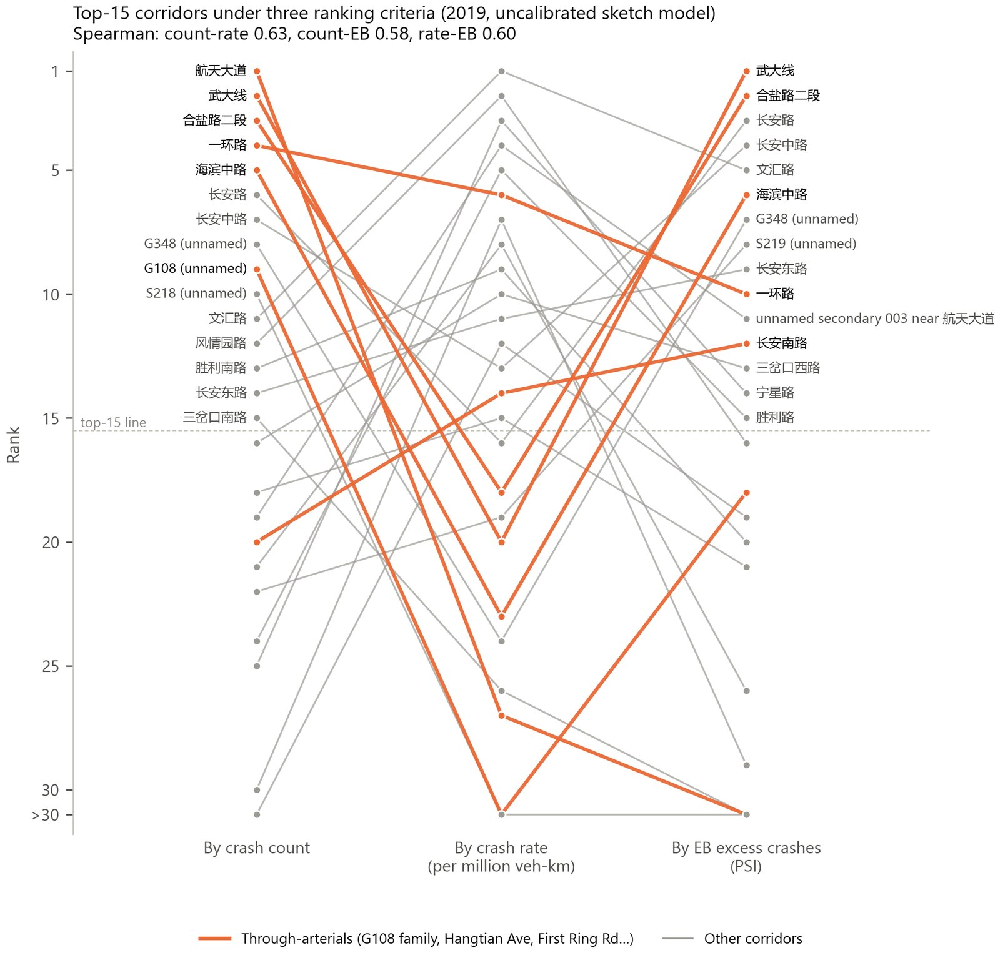
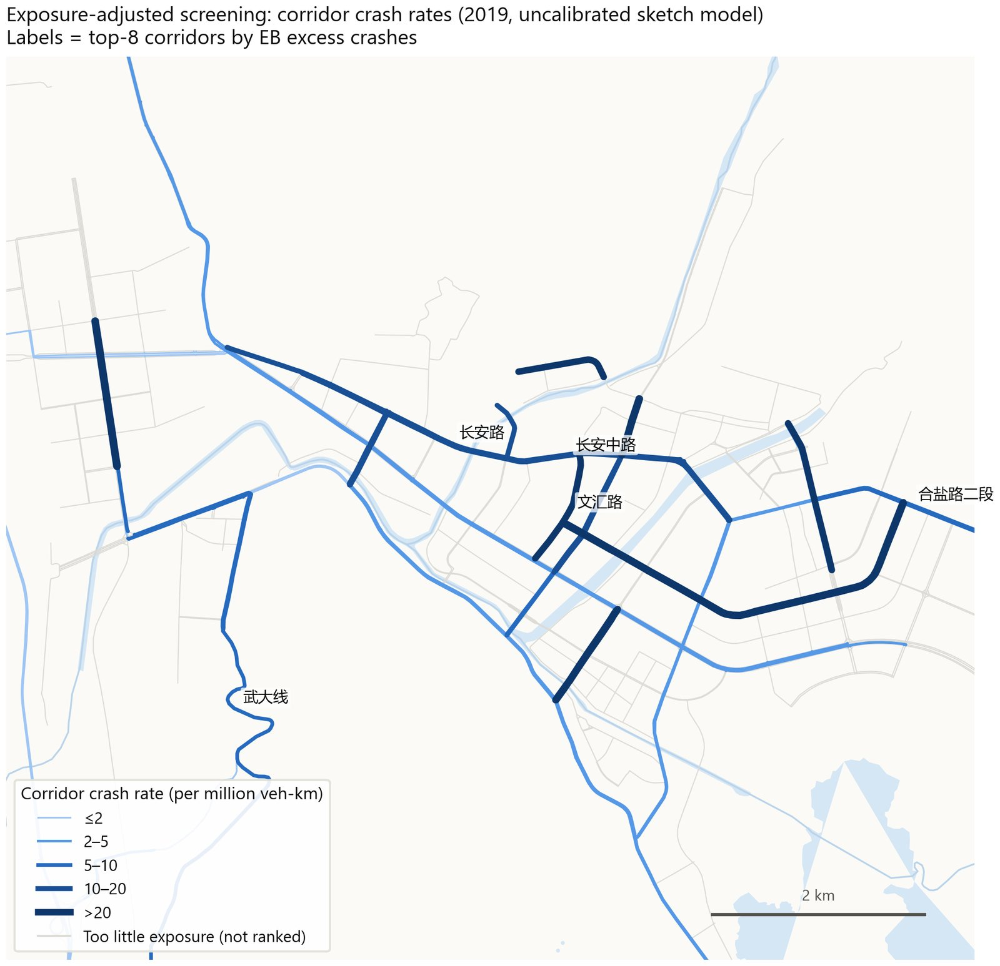
Where the evidence points to risk: Wuda Line, Heyan Road Section 2 and the Chang'an Road group. Treatments are geometric design, access management, median barriers and intersection channelization. Road safety audits come first. Where the issue is mainly exposure: Hangtian Avenue and the through arterials as a group. Measures are diverting through traffic and trucks, demand management, crossings for vulnerable road users (VRU) and speed limits. The remaining excess cells are treated site by site.
"The through-arterial rate ratio fell from 2.68 to 1.22. It lost significance. Hangtian Avenue has the most crashes. But it ranks 48th by Empirical Bayes excess. The reason is simple: it carries the most vehicle-kilometers. Three roads are riskier than their traffic predicts: Wuda Line, Heyan Road and the Chang'an Road corridor. They stay at the top in all 47 runs. So engineering treatments go there. The high-count arterial needs demand management and vulnerable-user protection instead."
- Volumes come from a sketch-level model, not calibrated to traffic counts. It covers motor vehicles only. E-bikes are not assigned.
- Daily volumes are scaled from the AM peak by a single factor.
- The SPFs are fitted to the same data. They are a reference group, not a locally calibrated SPF in the HSM sense. k ≈ 5 puts almost all EB weight on the observed count.
- There is only one year of data. Regression to the mean cannot be fully ruled out.
So the ranking is suited to deciding where to audit first. It does not decide investment directly.
12 · 2035 scenarios: where growth goes and how much policy can offset
A long-range forecast usually needs two things: a planned allocation of population and jobs, and a planned road network. Xichang has only a public-consultation draft of its territorial spatial master plan and a population plan. It has no central-city land-use structure, no employment target and no road network plan. So this is not a forecast. These are growth scenarios under constraints. I use the results only to compare scenarios.
Scenario setup
Three population levels
Central city of 600,000 / 700,000 / 850,000 residents. The 850,000 figure: development boundary of 85.79 km² ÷ 100 m² per person. Today's population is 470,000. So growth is 130,000 / 230,000 / 380,000 residents.
Allocation rule: "water-filling"
- The plan's growth directions are "expand west, expand south, lift the north, hold the east, refine the center." I split zones into five groups and weight each. West 1.0 (including the new zone 53 for the high-speed-rail town, 9.9 km²). North 1.0 (the Anning corridor). South 0.8. Center 0.5 (old city). East 0.25.
- Capacity: growth areas are capped at a gross density of 10,000 residents/km². Old city +10%. East +5%.
- Added residents ∝ weight × remaining capacity. Overflow is reallocated. Base case result: west 54%, north 31%, south 10%, old city 5%, east 0%. The high case uses 92% of total capacity. So 850,000 is close to the limit.
Other assumptions
- Attractions: POIs grow with population, at today's POIs per person by category. The jobs–housing ratio of each area stays the same. I do not model industrial parks as separate job centers.
- Network: most municipal roads in the 14th Five-Year Plan are already built. The real addition is the ring expressway. Its geometry comes from the OSM construction layer: four lanes (two per direction), 49.7 km, 4 interchanges. Three planned grade separations: capacity × 1.3 on 34 links within 300 m.
- Car mode share 18% → 20 / 24 / 28%. External traffic grows 1.5 / 2.5 / 3.5% per year for 10 years.
- Policy test: on top of the 2035 base, car share drops 5 percentage points (24 → 19%). Half shifts to transit, half to e-bikes.
Results
| Today | 2035 low | Base | High | Policy | |
|---|---|---|---|---|---|
| Population (thousands) | 470 | 600 | 700 | 850 | 700 |
| Car mode share | 18% | 20% | 24% | 28% | 19% |
| Car trips (thousands/day) | 195 | 269 | 360 | 494 | 298 |
| Daily VKT (millions) | 3.20 | 3.88 | 4.56 | 5.46 | 4.10 |
| Change from today | — | +21% | +42% | +70% | +28% |
| Resident car VKT per person (km/day) | 2.18 | 2.35 | 2.59 | 2.81 | 2.19 |
| Link length with V/C > 1 (km) | 34 | 28 | 48 | 80 | 32 |
| Expected arterial crashes (fitted elasticity / proportional) | — | +5 / +11% | +13 / +28% | +22 / +47% | +7 / +15% |
| Change in arterial crash cost (RMB 100 million/yr) | — | 0.11–0.72 | 0.29–1.83 | 0.47–3.03 | 0.15–0.95 |
- Spatial pattern: growth goes west and north. Caizishan Avenue rises from 11,000 to 23,000 vehicles/day. The Ningyuan Avenue west extension goes from ≈ 0 to 6,500. The G5 rises 55% along its length. Wuda Line rises 40%. Old-city corridors stay flat or fall. Chang'an Road, Sanchakou South Road and First Ring Road change by less than ±5%. Hangtian Avenue +9%. Heyan Road Section 2 −3%. There are two reasons. New residents live outside the old city. And the western section of the ring expressway (about 11,000 vehicles/day) takes traffic that now crosses the north of the old city.
- In the low case, mileage with V/C > 1 is lower than today (28 vs 34 km). The reason: the ring expressway and the added capacity at grade separations offset the demand growth. Three new bottlenecks appear: where the Ningyuan Avenue west extension enters the old city, the G5 Xichang North ramps, and the north section of Hangtian Avenue.
- Policy scenario: car share drops 5 percentage points. VKT growth falls from 42% to 28%. Mileage with V/C > 1 is 32 km, back to today's level. Hangtian Avenue +9% → +1%. Nanshan Avenue +19% → +6%. About 48% of the added arterial crashes are avoided. Avoided crash cost is RMB 14–88 million per year.
Crash conversion method: I use the class-specific SPFs from Section 11 (β1 0.31–0.45). I compute expected crashes on the 626 arterial links that carry volume today. I give two bounds: the fitted elasticity, and β1 = 1 (proportional). Cost: Phase 1 crash cost for 2019 of RMB 0.58–1.73 billion/yr × arterial crash share of 37% × percent change.
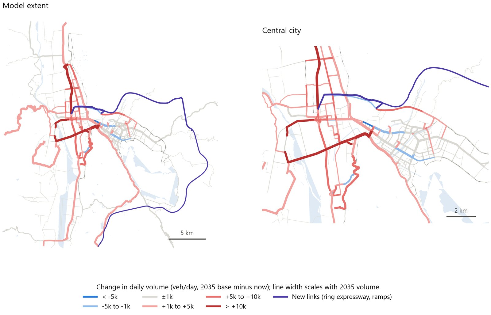
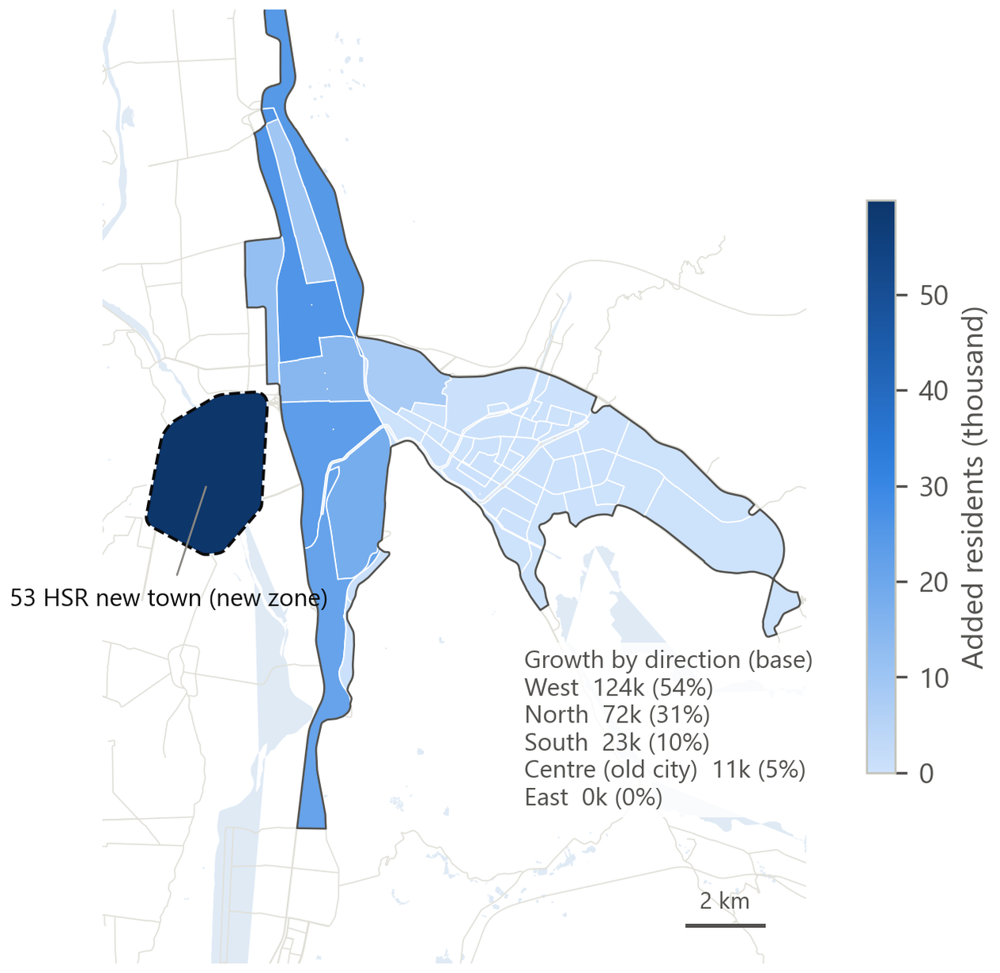
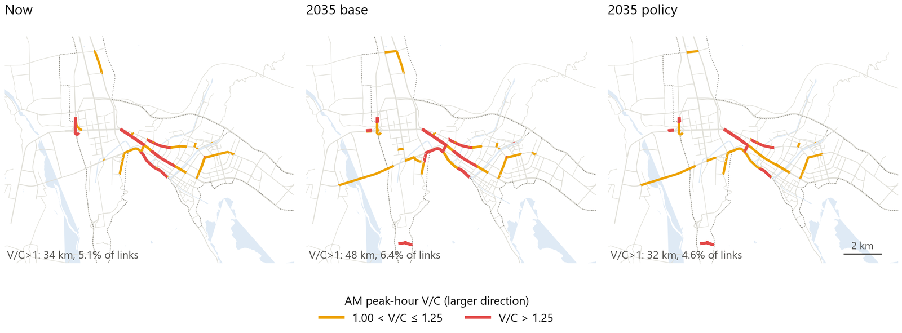
1: today, 2035 base and 2035 policy in three panels.">"I test 2035 population scenarios of 600 to 850 thousand. Vehicle-kilometers rise 21 to 70 percent. Growth concentrates in the west and north, where the plan directs development. A five-point cut in car mode share avoids about half the predicted increase in arterial crashes. It also brings over-capacity mileage back to today's level. I present these as constrained growth scenarios, not forecasts. There is no land-use plan or employment target for the city center."
13 · VISSIM microsimulation + SSAM: two signal plans for the worst intersection
The four-step model is a static macroscopic model. It cannot see signals, queues or left-turners forcing into gaps. So I drilled down to one intersection. VISSIM simulates each vehicle every 0.1 seconds. FHWA's SSAM then counts near misses, or conflicts, from the trajectories. This section first covers what is simulated and why, then how I built it.
Why Hangtian Avenue × Shengli South Road
This card explains the choice. The site meets three conditions at once:
- It ranks first among intersections in Phase 1, with 77 crashes: 42 angle and 33 rear-end. The second-ranked site has only 36.
- Exposure does not explain it away. Its south-east approach link has an EB excess of +70 crashes. That is about 13 times the SPF prediction. It ranks 6th among 640 links with volumes. Yet the Hangtian Avenue corridor as a whole has a negative excess. So the risk is concentrated at this node, not along the corridor.
- It is an at-grade signalized intersection in the central city. Engineers can act on it.
This closes the "macro → meso → micro" chain. The demand model says Hangtian Avenue as a whole just carries a lot of traffic. EB says: except at this intersection. VISSIM answers: how can this intersection be changed?
How VISSIM works
Microsimulation
Microsimulation models each vehicle at each time step, here 10 steps per second. It models each vehicle's acceleration, deceleration, lane changes and yielding. It can show bottlenecks such as signals, queues and weaving. A static macroscopic model cannot see these. So the two complement each other.
Wiedemann car-following model (psycho-physical model)
A car-following model describes how a driver follows the vehicle ahead. The driver switches among four states based on distance and speed difference: free driving, approaching, following and braking. Drivers cannot hold an exact distance. They drift between perception thresholds. This is called car-following oscillation.
- Wiedemann 74 (urban): three parameters. ax is the average standstill distance, default 2 m. bx_add is the additive safety distance, set to 2. bx_mult is the multiplicative part, set to 3. Desired safety distance d = ax + (bx_add + bx_mult · z) · √v. These three parameters mainly set the saturation flow rate. You can tune them to 1,600–1,800 pcu/h/lane.
- Wiedemann 99 (freeway / interurban): 10 parameters, more detailed. For example, CC0 is standstill distance, CC1 is headway time, CC2 is following variation.
- In this project, motor vehicles use W74 "Urban (motorized)". E-bike links use "Cycle-Track (free overtaking)," which allows side-by-side passing.
Lane changes
There are two kinds. A necessary lane change follows the route. A free lane change seeks a faster lane. Parameters: maximum deceleration, accepted deceleration, waiting time, and safety distance factors front and rear. Waiting time defaults to 60 s. After that, the vehicle is removed from the network. This is why 17 vehicles were removed under the existing plan.
Conflict areas vs priority rules
| Priority rules | Conflict areas | |
|---|---|---|
| How defined | Stop lines and conflict markers placed by hand on links | VISSIM creates them where links or connectors overlap. Default is passive (yellow). The user sets who has priority: red yields to green |
| Parameters | Minimum gap time, minimum headway distance | Front gap, rear gap, safety distance factor, visibility |
| Behavior | Yielding vehicle decides at the stop line | Yielding vehicle anticipates arrivals on the major stream. It can wait for a gap inside the conflict area. Permissive left turns behave this way |
| Recommendation | Fine control, but tedious | Recommended since VISSIM 5.x. This project uses conflict areas only |
Signals, seeds, evaluation
- Fixed-time signals: a VisSig .sig file defines signal groups, phases, cycle length and green splits. Signal heads sit at the stop line of each lane. The student edition cannot connect external actuated control.
- Random seeds: arrivals, desired speeds and driver parameters are all drawn at random. So one run is only one sample. This project runs 20 seeds per plan. I use seeds as samples in the statistical tests. The first 120 s are warm-up and are not counted.
- Evaluation outputs: node evaluation gives volume, average delay, stops and queues for each turning movement. There are also travel-time sections, delay segments and data collection points.
- Webster timing: cycle C0 = (1.5 L + 5) / (1 − Y). Y = Σ yi, the sum of critical lane flow ratios q/s for each phase. L is total lost time. Effective green gi = (C − L) · yi / Y. This project uses a saturation flow of 1,700 pcu/h/lane and 4 s lost time per phase.
SSAM: near misses instead of crashes
SSAM is the Surrogate Safety Assessment Model. FHWA developed it (Gettman & Head 2008). It reads the microsimulation trajectory file (.trj), finds conflict events between vehicle pairs, and computes surrogate safety measures. The logic: crashes are rare, and simulated vehicles do not crash. So near misses stand in for crashes.
- TTC (time to collision): assume both vehicles keep their current speed and heading. TTC is the time until they collide. A minimum TTC at or below a threshold counts as a conflict. The default threshold is 1.5 s.
- PET (post-encroachment time): the time between the first vehicle leaving the conflict point and the second vehicle arriving there. Threshold ≤ 5 s.
- Other severity measures include MaxS, DeltaS, DR and MaxDeltaV.
- Classification by conflict angle: based on the angle between the two headings. < 30° is rear-end. 30–85° is lane-change. > 85° is crossing. The SSAM default crossing threshold is 80°. This project uses 85°.
- Standard cleaning: remove records with TTC = 0. These are simulation artifacts where vehicle outlines already overlap. They make up 84–88% of records. Remove the warm-up period. Normalize per 1,000 entering vehicles.
SSAM conflicts are not crashes. Their use here: check whether the conflict types a plan reduces match the main crash types at this intersection.
The build
Software: VISSIM 5.30 student edition. Limits: network ≤ 1 km × 1 km, ≤ 600 s per run, ≤ 10 signal controllers, no pedestrians, no COM interface, and a watermark. Without COM, Python cannot drive VISSIM. But the .inp file is plain text. So a script generates the entire network.
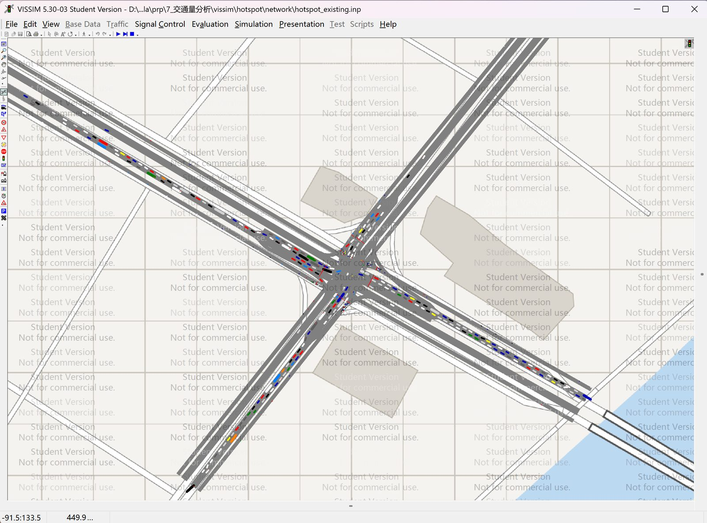
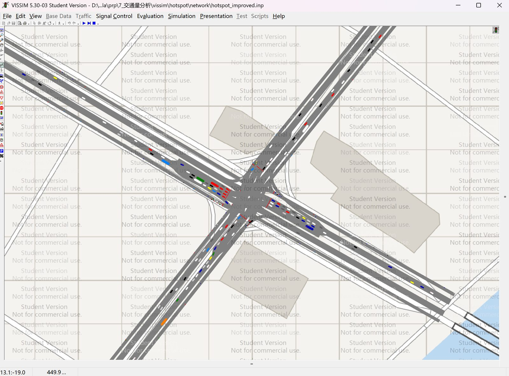
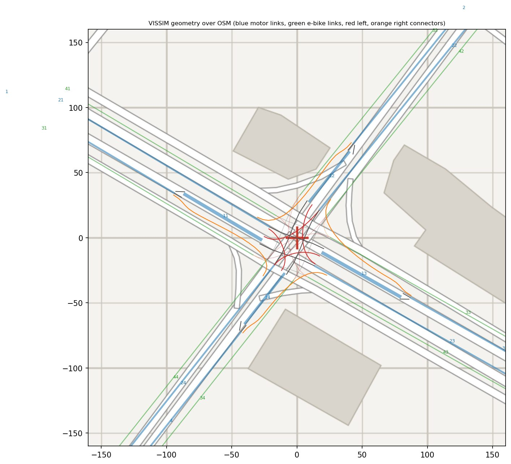
Results
Reasonableness check first
The improved plan passes. Motor-vehicle throughput is 96% of demand. None of the 12 turning movements has GEH > 5. The existing plan fails. Throughput is only 63%. 7 movements have GEH > 5, up to 17.4 on the Hangtian Avenue north-west left turn. 17 vehicles waited more than 60 s to change lanes and were removed. About 1/3 of demand never entered the intersection. So the comparison is biased in favor of the existing plan. Its measured disadvantage is a lower bound.
Delay
Average motor-vehicle delay fell from 62.7 to 38.5 s/veh (−39%, p < 0.001). At the same time, the improved plan served 52% more motor vehicles. Left-turn delay fell from 120–170 s to about 50 s. The cost is a small rise in delay for the north-east through movement on Shengli South Road.
Conflicts
| Type | Existing / 1,000 veh | Improved / 1,000 veh | Change | p |
|---|---|---|---|---|
| Crossing | 15.03 | 3.16 | −79% | < 0.001 |
| Lane-change | 5.52 | 2.70 | −51% | 0.060 |
| Rear-end | 183.45 | 184.74 | +1% | 0.148 |
| Total | 204.01 | 190.59 | −7% | 0.379 |
Interpretation: protected left turns remove the main crash type at this intersection. Of 77 crashes, 42 were angle crashes, which match crossing conflicts. Crossing risk per vehicle falls by about four-fifths. Rear-end conflicts are over 90% of the total. They grow in step with throughput, so the rate per 1,000 vehicles stays the same. So signal phasing changes the type of conflict, not the rear-end exposure from queues. Reducing rear-end conflicts needs queue measures: longer left-turn bays, queue warning or coordinated control.
"I picked the junction by evidence. It was first by crashes. It was still sixth by EB excess after I controlled for exposure. So the risk sits at the node. I coded the geometry from OSM. I took turning volumes from the demand model with select-link. I built two signal plans. I found that the default gaps let left-turners accept unsafe gaps. So I scripted 89 conflict areas and their priority rules. I added one rule: a clearing left-turn has priority at phase change. I ran twenty seeds per plan and counted conflicts with SSAM. Protected lefts cut crossing conflicts 79 percent and delay 39 percent. They served 96 percent of demand instead of 63 percent. The rear-end rate did not change. One caveat comes first: the base plan is oversaturated, so its disadvantage is a lower bound. And conflicts are surrogates, not crashes."
- The existing plan is oversaturated. Left-turn queues overflow the 70 m bays, block through traffic and reach the network boundary. Some vehicles cannot enter. I did not apply any of three remedies: check the actual bay lengths, extend the approaches, or lower the demand factor. I report the throughput shortfall separately.
- Geometry is based on OSM and imagery. Volumes come from a model not calibrated to traffic counts, scaled uniformly by 0.44. Signal timing is the Webster value. The existing two-phase permissive-left plan is an assumption and needs field checks. The student edition cannot simulate pedestrians. E-bike volumes and the 2.0 s left-turn rear gap are judgment values.
- SSAM conflicts ≠ crashes. The conclusions apply only to the relative comparison of the two plans.
- The planned ±30% left-turn share sensitivity test and the 2019 demand scenario did not make it into the final results.